Interacting with ANSA#
General#
The basic idea behind the scripting language is to automate many repetitive and tedious procedures with the minimum user interaction, or even to perform specific tasks that are not covered by the standard ANSA commands. Some of the tasks that can be performed by the scripting language are the following:
Reading and writing ASCII files.
Extracting any type of information from an already defined base.
Selections that take into account any criteria.
Assignment of attributes to parts, materials, properties etc.
Use of system commands.
Building and executing batch mesh sessions.
Creating a model hierarchy.
Creating user defined windows and buttons.
Co-operating with the MORPH tool for controlling an optimization loop.
Use of session commands.
Running automatically (after launching ANSA) a series of functions.
Can be called anytime without reopening a file and as many times as the user wants.
Communication with the interface (File Manager functions, Pick functions).
All these tasks that can affect the model definition, are controlled through a series of functions that interact with the ANSA interface. Before proceeding to the explanation of individual functions, it is important to emphasize in two basic topics: the treatment of ANSA elements and the meaning of ANSA entities and cards.
ANSA Modules and Namespaces#
The ANSA modules are:
Module |
Description |
|---|---|
Basic ansa scripting functions |
|
Topo, deck, visibility, element manipulation functions |
|
Batchmesh related functions |
|
Module oriented functions |
|
CAD and translator functions |
|
Mathematical functions |
|
A collection of all the ANSA constants and reserved methods |
|
Connections handling and realization functions |
|
DM functions |
|
guitk Module |
Graphical User Interface functions |
Kinetics functions |
|
Meshing functions |
|
Morph functions |
|
ANSA session commands |
|
Functions to interact with SPDRM |
|
Task Manager functions |
|
General functions |
|
Functions to interact with VR devices |
The constants module is one of the most commonly used, as it includes all the available decks.
reserved deck constants:
NASTRAN, LSDYNA, PAMCRASH, ABAQUS, RADIOSS, ANSYS, FLUENT, FLUENT2D, STAR, UH3D, CFDPP, OPENFOAM, PERMAS, MOLDEX3D, TAITHERM, SESTRA, THESEUS, SCTETRA, TAU, CGNS, CGNS2D, OPTISTRUCT
The deck constants can be simply accessed as shown on the following example:
from ansa import constants
constants.NASTRAN
constants.ABAQUS
There is also a ansa.constants.decks, which returns a tuple with all the deck constants.
It can be used to iterate through all the available decks.
from ansa import base
from ansa import constants
def main():
for deck in constants.decks:
print(base.TypesInCategory(deck, '__PROPERTIES__'))
Note
If zero value is given instead of the deck constant, then the current deck will be considered.
The constants module also contains several more reserved variables.
reserved variables:
FILENAME, FILEPATH, FLANCH_PROPERTY_ID, PART_COORD_SYS_DX1, PART_COORD_SYS_DX2, PART_COORD_SYS_DX3, PART_COORD_SYS_DY1, PART_COORD_SYS_DY2, PART_COORD_SYS_DY3, PART_COORD_SYS_DZ1, PART_COORD_SYS_DZ2, PART_COORD_SYS_DZ3, PART_COORD_SYS_X, PART_COORD_SYS_Y, PART_COORD_SYS_Z, PART_ID, PART_MASS, PART_MATERIAL_ID, PART_MATERIAL_NAME, PART_MODEL_NAME, PART_NAME, PART_VERSION, PART_VSC, PART_PROPERTY_ID, PART_PROPERTY_NAME, PART_PROPERTY_THICKNESS, POST_TRANSL_SCRIPT, POST_TRANSL_SCRIPT_ARGS, TRANSLATIONS, SEPARATORS, MAT_REG, SYMMETRY_PART_ID, SYMMETRY_PART_PID_OFFSET
There are also additional constants like the app_version and app_root_dir.
Constants |
Description |
|---|---|
Returns the ANSA version as a string |
|
Returns the ANSA version as an integer |
|
The system directory used for configuration files by the application |
|
Returns the application’s root directory |
Handling data#
The ANSA Entity#
In ANSA module, an ANSA entity is an object of type ansa.base.Entity(). Such objects:
are returned by functions
can be created
They have special read only attributes:
- _id
Returns the ANSA Entity id.
- _name
Returns the ANSA Entity name.
- _bname
Returns the ANSA Entity name in byte respresentation.
- _comment
Returns the ANSA Entity comment.
- _bcomment
Returns the ANSA Entity comment in byte representation.
- _edge_index
Returns the object’s edge index.
an attribute that can also be modified:
- position
Directly get and set global x,y,z coordinates for point-like Entities.
and methods:
- Entity(deck, id, type, facet, edge_index)
Entity object constructor; Returns the created Entity object.
- is_usable()
Returns True if the Ansa entity is usable (exists).
- ansa_type(deck)
Returns the ANSA type of the entity in the specified deck.
- card_fields(deck)
Returns a list with the names of all the active card fields.
- get_entity_values(deck, fields)
Get values from the entity using the edit card’s field names. This method works similar to
ansa.base.GetEntityCardValues(). This method returns directly the entity objects for the fields that reference Entity objects. The fields argument is a list containing the names of the card field labels to extract the values from.- set_entity_values(deck, fields)
Set or change values of the entity using its Edit Card Fields. This method works similar to
ansa.base.SetEntityCardValues(). Returns zero on success, non zero on error. The fields argument is a dictionary with keys the name of the ANSA card labels and values the desired card field values. By using this method, it is possible to set an entity object as a value for a respective field.
An example of getting reference to the entities is shown below, using two similar functions:
node1 = base.CreateEntity(constants.ABAQUS, "NODE")
node2 = base.Entity(constants.ABAQUS, node1._id, "NODE")
if node1 == node2:
print("OK: Objects are equal")
else:
print("ERROR")
Checking if the object is usable:
node = base.Entity(constants.ABAQUS, 1, "NODE")
# The following call will delete the node
base.DeleteEntity(node, force=True)
# Now the node object has been deleted.
if not node.is_usable():
print("This node has left us.")
ANSA cards and entity types#
Most of the entities in ANSA have a card that includes all the necessary information regarding them. The type of each entity is displayed on the card’s window header, enclosed in brackets. This entity type is very important since it is the keyword that must be used in order to have access to the card and its contents. For example, a NASTRAN ‘shell’ has a card with type SHELL and this is the keyword that must be used when dealing with this kind of entity. The labels of the card fields are also important since they must be used in order to obtain their values.
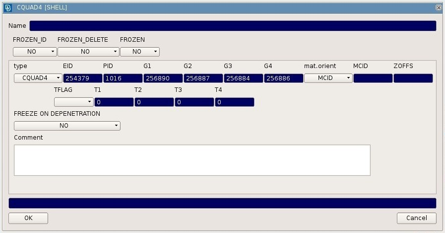
The types of entities that either don’t have entity cards or the previously described rule doesn’t cover them are the following:
Entity type |
Description |
|---|---|
ANSAPART |
Ansa part |
ANSAGROUP |
Ansa group |
BATCH_MESH_SESSION_GROUP |
Batch mesh group |
BATCH_MESH_LAYERS_SCENARIO |
Layer scenario |
BATCH_MESH_VOLUME_SCENARIO |
Volume scenario |
BATCH_MESH_WRAP_SCENARIO |
Wrap scenario |
BATCH_MESH_SESSION |
Batch mesh session |
BATCH_MESH_LAYERS_SESSION |
Layer session |
BATCH_MESH_VOLUME_SESSION |
Volume session |
BATCH_MESH_WRAP_SESSION |
Wrap session |
BATCH_MESH_LAYERS_AREA |
Layer area |
SOLIDFACET |
Solid facets |
TSHELLFACET |
Continuum shell facets |
Note
The deck curves use a variety of keywords that can be found under the help text of the built in function ansa.base.CreateLoadCurve().
Collecting entities#
The most significant functions for collecting entities are displayed in the following table:
Function |
Description |
|---|---|
Collects entities massively |
|
Gets a single entity |
|
Gets PARTs or GROUPs |
|
Collects entities according to their name |
|
Creates an object that monitors and reports any new model entity creation |
|
Collects types of entities that exist in a specific category |
Collecting entities of the database#
For collecting massively a type of entity (e.g. SHELL) the appropriate function is the ansa.base.CollectEntities(). One of the advantages of this function is that it can be used for finding entities that are used by other entities while it is the only function that can collect visible entities. Its syntax is very flexible and can accept either matrices or single elements (pointers). A variable number of input arguments can be specified as well. Let’s see the capabilities of the ansa.base.CollectEntities() function with some examples.
import ansa
from ansa import base
from ansa import constants
def main():
#Define the keywords of the entities that you want to collect in a tuple.
#These keywords are taken from the title of their cards.
search_type = ('PSHELL', 'PSOLID')
ents = base.CollectEntities(constants.NASTRAN, None, search_type)
In this approach the input arguments are more than one, thus they are passed to the function as a list. The second argument of the function indicates the search domain, which in order for the user to collect entities from the whole database, it must be set to None. The output argument is a list that contains the objects of PSHELLs and PSOLIDs of the database.
The definition of the deck must be compatible with the entities that are going to be collected. An approach like the following is not accepted:
#WRONG
search_type = ('PSHELL', 'PSOLID')
ents = base.CollectEntities(constants.PAMCRASH, None, search_type)
In this case the equivalent keywords for PAMCRASH deck are PART_SHELL and PART_SOLID.
For collecting all the properties or materials of the database, a string indicating the entity category must be used:
def main():
all_props = base.CollectEntities(constants.NASTRAN, None, '__PROPERTIES__')
all_mats = base.CollectEntities(constants.NASTRAN, None, '__MATERIALS__')
Collecting entities from other entities#
In this case the GRIDs that are used from SHELLs must be collected. In scripting language terminology, a list of shells is considered a container and must be given as a second argument in order to prompt the function to search only into the collected shells. A container can be either a list or a single object.
def main():
# Firstly, collect the shells of the whole database
search_type = ('SHELL',)
shells = CollectEntities(constants.NASTRAN, None, search_type)
# Then, collect the grids of the shells
search_grid = ('GRID',)
grids = base.CollectEntities(constants.NASTRAN, shells, search_grid)
Alternatively, the entity’s keyword could have been used instead (as string).
def main():
# Firstly, collect the shells of the whole database
shells = base.CollectEntities(constants.NASTRAN, None, 'SHELL')
# Then, collect the grids of the shells
grids = base.CollectEntities(constants.NASTRAN, shells, 'GRID')
The third argument that defines the type of entities, can also accept some special keywords. One of those is the keyword “__ALL_ENTITIES__”, which can be used to collect all the entities that are included into a superior entity. This makes sense in SETs, PARTs, Connections, etc.
def main():
# Collect the sets of the database
sets = base.CollectEntities(constants.NASTRAN, None, 'SET')
# Collect all the entities that belong to these sets
ents = base.CollectEntities(constants.NASTRAN, sets, '__ALL_ENTITIES__')
Attention must be given to the meaning of containers. Many entities in ANSA are considered as containers since they include other entities inside them e.g. SHELLs include GRIDs. These containers are classified according to their level. For instance, SHELLs are of higher level than GRIDs while PSHELLs are of higher level than SHELLs and GRIDs. So, in order to search for entities inside a container, the ansa.base.CollectEntities() function must recursively search until the lowest level. This is made clear in the following examples.
def main():
pshells = base.CollectEntities(constants.NASTRAN, None, 'PSHELL', recursive=False)
shells = base.CollectEntities(constants.NASTRAN, pshells, 'SHELL', recursive=False)
print(len(shells))
The recursive argument of CollectEntities is False, since SHELLs are only one level under PSHELLs. In order to directly find the GRIDs that are used by PSHELLs, the recursive argument must be set to True, forcing a recursive search until the lowest level.
def main():
pshells = base.CollectEntities(constants.NASTRAN, None, 'PSHELL', recursive=False)
grids = base.CollectEntities(constants.NASTRAN, pshells, 'GRID', recursive=True)
print(len(grids))
A list that contains entities of specific type cannot be used as a container for collecting entities of the same type. For example, a list that contains objects of SHELLs and SOLIDs cannot be used as container for collecting SHELLs or SOLIDs but it can only be used for GRIDs, which is a lower level entity type.
Note
The returned list of objects is not sorted according to the ids of the entities that they reference.
Collecting visible entities#
The function ansa.base.CollectEntities() is the only one capable of collecting visible entities. This is made possible by setting the ‘filter_visible’ argument to True, as shown below:
def main():
shells = base.CollectEntities(constants.NASTRAN, None, 'SHELL', filter_visible=True)
print(len(shells))
Note
Visible entities are considered all the entities that their visibility is controlled through the Database Browser. Thus it is impossible to collect visible entities like PROPERTIES or MATERIALS.
Collecting the properties of entities#
In order to acquire the properties of a number of given entities e.g. the properties of visible shells, the parameter ‘prop_from_entities’ must be set to True:
def main():
shells = base.CollectEntities(constants.NASTRAN, None, 'SHELL', filter_visible=True)
props = base.CollectEntities(constants.NASTRAN, shells, 'PSHELL', prop_from_entities=True)
for i in range(len(props)):
print('PID:', props[i]._id)
Collecting the materials of entities#
In order to acquire the materials of a number of given entities e.g. the materials of parts, the parameter ‘mat_from_entities’ must be set to True:
def main():
part = base.GetPartFromModuleId('1')
mats = base.CollectEntities(constants.NASTRAN, part, 'MAT1', mat_from_entities=True)
If the type of a material is not known, then the keyword “__MATERIALS__” can be used instead of “MAT1”:
mats = base.CollectEntities(constants.NASTRAN, part, '__MATERIALS__', mat_from_entities=True)
The base.CollectEntities() function needs to know what types of entities to search for. In simple cases where specific types are needed, the user just have to open the respective card and see the entity’s keyword. For more complicated cases where the searching entities are not well known or they are too many to open their cards one by one, the use of the function ansa.base.TypesInCategory() is necessary. The function uses two input arguments; the name of the deck and a string that defines the searching area. The output is a matrix with all the supported types. The string that denotes the searching area must have one of the following values:
Category |
Description |
|---|---|
“__MATERIALS__” |
Gets all available material types of the specified deck |
“__PROPERTIES__” |
Gets all available property types of the specified deck |
“__ELEMENTS__” |
Gets all available element types of the specified deck |
“__VISIBLE__” |
Gets all visible element types of the specified deck |
“__ALL_ENTITIES__” |
Gets all supported entities of the specified deck |
“__CONNECTIONS__” |
Gets all supported connections |
A useful example, where all the connection types of the database are collected in order to be realized, is shown below:
def RealizeAllConnections():
#Get all connection types
connection_types = base.TypesInCategory(constants.LSDYNA, '__CONNECTIONS__')
cons = base.CollectEntities(constants.LSDYNA, None, connection_types)
connections.RealizeConnections(cons)
Getting single entities#
In order to get a single object of an entity, the functions ansa.base.GetEntity(), ansa.base.GetFirstEntity(), ansa.base.GetNextEntity() are available.
The use of the function ansa.base.GetEntity() requires both the type and the id of the entity, while it returns a reference to the object of the entity.
def GetSingleEntity():
group = base.GetEntity(constants.PAMCRASH, 'GROUP', 100)
In the above example, the object of the Pam-Crash GROUP with id 100 is returned. The type is not necessarily needed if the function is used for getting properties, materials or model browser containers. In that case, instead of the entity type, the keywords “__MATERIALS__”, “__PROPERTIES__” or “__MBCONTAINERS__” can be used.
def main():
prop = base.GetEntity(constants.NASTRAN, '__PROPERTIES__', 10)
mat = base.GetEntity(constants.NASTRAN, '__MATERIALS__', 10)
mb = base.GetEntity(constants.NASTRAN, '__MBCONTAINERS__', 10)
Note
The GetEntity function cannot collect ANSAPARTS and ANSAGROUPS from the PART MANAGER through their Module Id. Instead the function ansa.base.GetPartFromModuleId() has to be used.
Getting single parts or groups through their ids#
In order to get a single ANSAPART or ANSAGROUP that has a known id (Module Id), the function ansa.base.GetPartFromModuleId() can be used.
Suppose there is a PART object with module id “1A” and a GROUP object with module id “100”. The way to acquire these objects is shown below:
def main():
part = base.GetPartFromModuleId("1A")
group = base.GetPartFromModuleId("100")
Collecting entities according to their name#
Apart from ids, names can also be used as searching keywords for collecting any type of entities. The function that pulls this process off, is the ansa.base.NameToEnts(), which takes an argument containing the search pattern, also accepting Perl regular expressions, and two more optional arguments containing the deck and the search mode. It returns a list containing references to all entities with successful name matches. This function is mostly used in combination with the ansa.base.Entity.ansa_type() in order to distinguish the type of entities.
In the following example, suppose that the whole database must be searched in order to collect and store any PSHELLs and PSOLIDs whose name starts with “Default”.
def main():
#Collect entities that satisfy the searching pattern
ents = base.NameToEnts("^Default.*")
pshells = []
psolids = []
for ent in ents:
#Distinguish the type of entity
if ent.ansa_type(constants.NASTRAN) == "PSHELL":
pshells.append(ent)
if ent.ansa_type(constants.NASTRAN) == "PSOLID":
psolids.append(ent)
If no entities are found the function returns the keyword None. This case can be identified by using an if statement.
ents = base.NameToEnts("^Default.*")
if ents is None:
print('No entities were found')
Collecting newly created/imported entities#
Actions like importing files, merging databases or reading connection files are very common during the execution of scripts. In any case, they affect significantly the scripting process, since the amount of entities in the current database is increased and thus it may be needed to know exactly which are the new entities. The class ansa.base.CollectNewModelEntities must be used in order to recognize all the changes of the base. Firstly, the constructor of the class needs to be called, in order for the monitoring of any new entities to begin and to create a collector object. Then, the function report is used, in order to collect all the new entities that have been created since the beginning of the monitoring. The following example demonstrates the use of this function:
import ansa
from ansa import base
def main():
collector = base.CollectNewModelEntities()
n = base.CreateEntity(constants.ABAQUS, 'NODE')
new_entities = collector.report()
del collector
print(len(new_entities))
The above code will print 1, as there is only a single entity created since the beginning of the monitoring process.
In order to collect only specific types of entities, the ansa.base.CollectNewModelEntities must be initialized with the optional argument “filter_types”, given a matrix containing the entity types to be monitored:
import ansa
from ansa import base
from ansa import constants
from ansa import connections
def main():
ents = ("SHELL_SECTION", "SHELL")
container = base.CollectNewModelEntities(deck=constants.ABAQUS, filter_types=ents)
base.InputAbaqus("/home/work/data.inp")
connections.ReadConnections("XML", "/home/work/connections.xml")
new_entities = container.report()
del container
for new_entity in new_entities:
print(new_entity.ansa_type(constants.ABAQUS))
Picking entities from the screen#
The user is able to pick one or more entities which are visible in the Database Browser, by using the function ansa.base.PickEntities(). The function must be called with at least 2 arguments; the deck and a list containing the entity types to pick. When the function is executed, ANSA highlights only the defined entities on the screen and waits for the user to confirm the selections. After the confirmation, the execution of the script continues normally. The function returns a list with all the selected entities.
import ansa
from ansa import base
def main():
types_to_pick = ('SHELL', 'SOLID')
ents = base.PickEntities(constants.NASTRAN, types_to_pick)
print(len(ents))
Select files or directories through File Manager#
The Script Editor is able to directly interact with the File Manager through the functions ansa.utils.SelectOpenDir(), ansa.utils.SelectSaveDir(), ansa.utils.SelectOpenFile(), ansa.utils.SelectSaveFile(), ansa.utils.SelectOpenFileIn(), ansa.utils.SelectSaveFileIn(). These functions open the File Manager and allow the selection or creation of files and directories. This is an elegant way to use file and directory paths in user scripts, since it enables the interactive definition of script parameters. The aforementioned functions that deal with files, return a list containing strings that represent the full path to the selected files, while those dealing with directories return a string indicating the full path to the folder.
import ansa
from ansa import utils
def Selection():
print('Select the file for reading')
read_file = utils.SelectOpenFile(0, 'csv files (*.csv)')
#The list 'read_file' contains only one entry since the
#the first argument of 'SelectOpenFile' was 0.
print('The file that was selected is:', read_file[0])
print('Select the log file for writing the error messages')
save_file = utils.SelectSaveFile()
print('The file that was selected for writing errors is:', save_file)
print('Select the directory where the ANSA files are located')
dir = utils.SelectOpenDir("")
print('The selected directory is:', dir)
If nothing is selected it can be identified using an if statement with the ‘not’ operator.
read_file = utils.SelectOpenFile(0, 'csv files (*.csv)')
if not read_file:
print('No file was selected.')
or
dir = utils.SelectOpenDir('')
if not dir:
print('No directory was selected.')
Edit, Create and Delete Entities#
Once the entities have been collected, the next step is to edit, modify or delete some of them. The functions that are oftenly used for this purpose are the following:
Function |
Description |
|---|---|
Gets values from a card |
|
Sets values to a card |
|
Creates a new entity |
|
Creates a connection point |
|
Creates a connection line |
|
Creates a connection face |
|
Realizes connections |
|
Deletes an entity |
|
Creates new parts |
|
Creates new groups |
Get values from an entity using its Edit card#
In order to acquire the values of an entity’s edit card the functions ansa.base.GetEntityCardValues() and ansa.base.Entity.get_entity_values() are used. Both these functions work in a similar way, with the ansa.base.Entity.get_entity_values() method being a new addition and providing the ability to obtain any object that is referenced in an entity’s card.
Their call normally follows functions that have collected a number of entities in a prior step. Apart from the deck and the reference to the entity, a list containing all the labels of the values to be obtained, must be given as an argument. These labels are the keywords of the fields, exactly as they appear in the edit card. The following example demonstrates the process of getting the values of the name, property id, material id and thickness, of all the SECTION_SHELL cards of the LSDYNA deck, by using the function ansa.base.GetEntityCardValues():
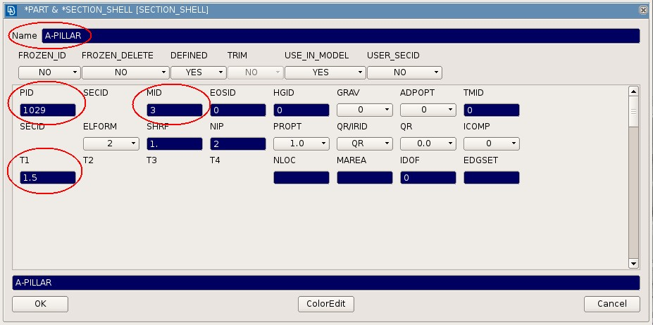
import ansa
from ansa import base
from ansa import constants
def GetValues():
props = base.CollectEntities(constants.LSDYNA, None, 'SECTION_SHELL')
#Initialize lists
names = []
pids = []
mids = []
thickness = []
for prop in props:
vals = base.GetEntityCardValues(constants.LSDYNA, prop, ('Name', 'PID', 'MID', 'T1'))
names.append(vals['Name'])
pids.append(vals['PID'])
mids.append(vals['MID'])
thickness.append(vals['T1'])
It is crucial for the user to be familiar with the labels of each edit card, since they must be written exactly as they appear in the cards. The function returns a dictionary with keys the requested fields and values the corresponding values. If an error occurs the value of the particular field will be None.
If the user needs direct access to the entity object of a card field, it is recommended to use the method ansa.base.Entity.get_entity_values(). The following example demonstrates its use, in contrast to the actions performed previously, in order to get the entity object:
import ansa
from ansa import base
from ansa import constants
def main():
shell = base.GetEntity(constants.ABAQUS, 'SHELL', 1)
# previous approach
vals = base.GetEntityCardValues(constants.ABAQUS, shell, ('G1', 'G2', 'G3', 'G4'))
g1_obj = base.GetEntity(constants.ABAQUS, 'NODE', vals['G1'])
print(g1_obj.ansa_type(constants.ABAQUS))
# new approach
vals2 = shell.get_entity_values(constants.ABAQUS, ('G1', 'G2', 'G3', 'G4'))
print(vals2['G1'].ansa_type(constants.ABAQUS))
To avoid opening and closing cards just for seeing the names of the labels, three global label – keywords can be used. These keywords allow the extraction of the entity’s id, property and type, without knowing the names of their respective labels. Their syntax is the following:
Label |
Description |
|---|---|
__id__ |
The entity’s ID |
__type__ |
The entity’s ANSA type |
__prop__ |
The entity’s property id |
A plain usage of these keywords is shown in the following example:
status = base.GetEntityCardValues(constants.LSDYNA, ent, ('__id__', '__type__', '__prop__'))
In order to get the card values from an object that is referenced in the particular entity card, the redirection symbol ‘->’ can be used. A common example is to obtain the Young’s modules, while the property card is accessed.
def main():
pshell = base.GetEntity(constants.NASTRAN, 'PSHELL', 100)
#ret = base.GetEntityCardValues(constants.NASTRAN, pshell, ('MID1->E', )) old approach
ret = pshell.get_entity_values(constants.NASTRAN, ('MID1->E', ))
print(ret['MID1->E'])
Modifying the card’s values#
The contents of a card can be modified by using the functions ansa.base.SetEntityCardValues() and ansa.base.Entity.set_entity_values(), which work similarly to the ansa.base.GetEntityCardValues() and the ansa.base.Entity.get_entity_values(), respectively. This time, a dictionary with pairs of labels – values must be given as an argument to the function. In the following example the id and thickness of a specific property are modified.
def SetValues():
#Get the PART_SHELL property with id 10
prop = base.GetEntity(constants.PAMCRASH, 'PART_SHELL', 10)
#Set the new values for id and thickness.
base.SetEntityCardValues(constants.PAMCRASH, prop, {'IDPRT': 1000, 'h': 1.75})
If the user wants to directly set an object as the field’s value, the ansa.base.Entity.get_entity_values() method should be used:
def SetValues():
shell = base.GetEntity(constants.ABAQUS, 'SHELL', 1)
node = base.GetEntity(constants.ABAQUS, 'NODE', 1)
shell.set_entity_values(constants.ABAQUS, {'G1': node})
If any keyword is given wrong, the function will not work, even if all the other keywords have been defined correctly. In this case the function will return the number of wrong occurrences.
status = base.SetEntityCardValues(constants.PAMCRASH, prop, {'IDPRT': 1000, 'h1': 1.75})
Although the ‘IDPRT’ keyword is correct, the function will not work because the ‘h1’ label is incorrect, resulting in a return of ‘status = 1’.
Note
The global labels (‘__id__’, ‘__prop__’, ‘__type__’) are also valid.
Note
If the user wants to retrieve or modify the coordinates of a point-like Entity (e.g. a node), it is strongly recommended to use the attribute ‘position’, which is up to 45 times faster than using the aforementioned functions to get and set a card’s values. An example is shown below:
import ansa
from ansa import base
from ansa import constants
def main():
node = base.CreateEntity(constants.ABAQUS, 'NODE')
node.position = (-12.0193, 0., 8.) #set the coordinates
print(node.position) #get the coordinates
Creating new entities#
The script editor can also be used to create new entities like nodes, properties, materials etc. The function that can be used for this purpose is the ansa.base.CreateEntity(). Apart from the deck, it is necessary to declare the entity type keyword and a dictionary containing pairs of labels – values. The function returns a reference to the newly created entity.
def CreateGrid():
vals = {'NID': 100, 'X1': 3.5, 'X2': 10.8, 'X3': 246.7}
base.CreateEntity(constants.NASTRAN, 'GRID', vals)
During the creation of an entity, all the fields that are necessary for its definition but are not specified by the user (e.g. the id) are automatically filled by ANSA.
Note
Not all entities of ANSA can be created by using the CreateEntity function.
Creating parts and groups#
In order to create ANSA parts and ANSA groups, the functions ansa.base.NewPart() and ansa.base.NewGroup() have to be used. Both of them receive a name and optionally a module id, as arguments, and return a reference to the newly created part or group.
def main():
#Create a part with name 'door' and id 10.
part = base.NewPart('door', '10')
#Create a group with name 'side' and without id.
group = base.NewGroup('side', '')
Creating connection entities#
For the creation of connection entities (points, lines, faces), the functions ansa.connections.CreateConnectionPoint(), ansa.connections.CreateConnectionLine() and ansa.connections.CreateConnectionFace are used. Except from the definition of the type and the id, the function needs to be given the rest of the information needed to successfully define a connection entity, like the position of the point and the parts that will be connected. The id argument can also be zero, letting ANSA define it, if the user does not want to explicitly set it. The function returns a reference to the newly created connection entity, or None in case of an error.
In the following example, a spotweld point and an adhesive line are created:
import ansa
from ansa import connections
from ansa import base
from ansa import constants
def CreateCnctEnts():
#create a spotweld point with id: 122 at the position: (2.3, 3.0, -1.0)
xyz = (2.3, 3.0, -1.0)
#part ids that will be connected
part_ids_point = (1, 'bp_416', 4)
cnctn_p = connections.CreateConnectionPoint('SpotweldPoint_Type', xyz, 122, part_ids_point)
#create an adhesive line of arbitrary ID
curves = (base.GetEntity(constants.NASTRAN, 'CURVE', 15), )
#part ids that will be connected
part_ids_curve = (2, 3)
cnctn_c = connections.CreateConnectionLine('AdhesiveLine_Type', curves, 0, part_ids_curve)
base.SetEntityCardValues(constants.NASTRAN, cnctn_c, {'W': 1})
Attention must be given to the first argument of all three functions, since this string indicates the type of the entity that will be created. Its syntax can be found in the title of each connection card.
Editing connection entities#
The basic information of a connection entity, like its ID or the ids and pids of the connected parts etc., can be read or edited through the known base.GetEntityCardValues() or Entity.get_entity_values() and base.SetEntityCardValues() or Entity.set_entity_values() functions. An example is shonw below:
connections = base.CollectEntities(constants.NASTRAN, None, 'SpotweldPoint_Type')
for connection in connections:
vals = ('ID', 'X', 'Y', 'Z', 'P1', 'P2', 'P3', 'P4')
ret = connection.get_entity_values(constants.NASTRAN, vals)
print("ID:", str(ret['ID']), ", x:", str(ret['X']))
or
connections = base.CollectEntities(constants.NASTRAN, None, 'AdhesiveLine_Type')
for connection in connections:
connections.set_entity_values(constants.NASTRAN, {'W': 1})
Realizing Connections#
After creating the connection entities, the user has to “realize” them by using the function ansa.connections.RealizeConnections(). All the representation characteristics that appear on the GUI are fully supported in these functions, by using a specific name convention that is taken from ANSA.defaults. The number of input arguments is variable and anything that is not defined takes a default value from ANSA.defaults.
As an example, the strings that can be used for spotweld representations can be seen below:
#Default Page for Spotweld Points
format : RBE2 | RBAR | CBAR | CBEAM | CELAS2 | RBE2-CELAS1-RBE2 |
PASTED NODES | CBUSH | DYNA SPOT WELD | PAM SPOT WELD |
NASTRAN CWELD | PAM PLINK | RBE3-HEXA-RBE3 | AUTO SP2 |
RBE3-CBUSH-RBE3 | SPIDER | RADIOSS WELD |
ABAQUS FASTENER | SPIDER2 | RBE3-CELAS1-RBE3 |
RBE3-CBAR-RBE3 | RBE3-CBEAM-RBE3 | PERMAS SPOTWELD
SpotweldPoint_Type = RBE2
while the strings for individual representation settings are:
Connection Manager Values
SpotweldPoint_SPIDER_SearchDist = 5.000000
SpotweldPoint_SPIDER_RBE2_PinFlags = 123456
SpotweldPoint_SPIDER_ProjectToPerim = y
SpotweldPoint_SPIDER_PointsAroundHole = 8
SpotweldPoint_SPIDER_ParallelToPerim = y
SpotweldPoint_SPIDER_PBAR_ID =
SpotweldPoint_SPIDER_KeepSamePID = n
SpotweldPoint_SPIDER_ForceZeroGap = n
SpotweldPoint_SPIDER_DoNotMove = y
SpotweldPoint_SPIDER_DoNotCreateCoord = n
SpotweldPoint_SPIDER_DistanceFromPerimeter = 3.000000
SpotweldPoint_SPIDER_DiSize_Index = 1
SpotweldPoint_SPIDER_DiSize = 3.000000
SpotweldPoint_SPIDER_CreateRBE2 = y
SpotweldPoint_SPIDER_CBAR_PinFlags = 0
SpotweldPoint_SPIDER2_Zone2_Index = 2
SpotweldPoint_SPIDER2_Zone2 = 0.000000
SpotweldPoint_SPIDER2_Zone1_Index = 2
SpotweldPoint_SPIDER2_Zone1 = 0.250000
SpotweldPoint_SPIDER2_SearchDist = 5.000000
SpotweldPoint_SPIDER2_RBE2PinFlags = 1235
SpotweldPoint_SPIDER2_PointsAroundHole = 8
SpotweldPoint_SPIDER2_ParallelZones = n
SpotweldPoint_SPIDER2_PBAR_ID =
SpotweldPoint_SPIDER2_ForceZeroGap = n
SpotweldPoint_SPIDER2_DoNotMove = y
SpotweldPoint_SPIDER2_CBARPinFlags = 0
SpotweldPoint_RBE3-HEXA-RBE3_UseThicknessAsHeight = n
SpotweldPoint_RBE3-HEXA-RBE3_SpecifyHeight = n
SpotweldPoint_RBE3-HEXA-RBE3_SeparateRefCPinflags = n
SpotweldPoint_RBE3-HEXA-RBE3_SearchDist =
SpotweldPoint_RBE3-HEXA-RBE3_RefCPinFlags = 123
SpotweldPoint_RBE3-HEXA-RBE3_PinFlags = 123
SpotweldPoint_RBE3-HEXA-RBE3_PSOLID_ID =
SpotweldPoint_RBE3-HEXA-RBE3_Height =
SpotweldPoint_RBE3-HEXA-RBE3_ForceOrthoSolids = n
SpotweldPoint_RBE3-HEXA-RBE3_FailIfAspect = 0.000000
SpotweldPoint_RBE3-HEXA-RBE3_DoNotMove = y
SpotweldPoint_RBE3-HEXA-RBE3_AreaScaleFactor = 0.000000
In the following example, the spotweld points must be realized in NASTRAN CWELDs with the option ELPAT and specific PWELD id, while the adhesive lines must be realized in RBE3-HEXA-RBE3 with 2 stripes, specific PSOLID id and the option ‘Force Ortho Solids’ activated.
def RealizeAllCncts():
#Collect the spotwelds of the database
spots = base.CollectEntities(constants.NASTRAN, None, 'SpotweldPoint_Type')
#Realize the spotwelds
connections.RealizeConnections(spots, {"SpotweldPoint_Type": "NASTRAN CWELD",
"SpotweldPoint_NASTRAN-CWELD_WeldType": 2,
"SpotweldPoint_NASTRAN-CWELD_SearchDist": 10,
"SpotweldPoint_NASTRAN-CWELD_PWELD_ID": 1000})
#Collect the adhesive lines of the database
adh_lines = base.CollectEntities(constants.NASTRAN, None, 'AdhesiveLine_Type')
#Realize the adhesive lines
connections.RealizeConnections(adh_lines, {"AdhesiveLine_RBE3-HEXA-RBE3_SearchDist": 10,
"AdhesiveLine_RBE3-HEXA-RBE3_NumOfStripes": 2,
"AdhesiveLine_RBE3-HEXA-RBE3_ForceOrthoSolids": "y",
"AdhesiveLine_RBE3-HEXA-RBE3_PSOLID_ID": 2000})
Some notes are necessary:
The order of settings doesn’t affect the final result.
The value of a setting must always follow the setting, e.g. “SpotweldPoint_NASTRAN-CWELD_WeldType”: 2 is correct, while “SpotweldPoint_NASTRAN-CWELD_WeldType” is wrong.
If the name of the representation is omitted, then the default will be created, just like in the case of the adhesive line, shown in the above example.
The only alphanumeric characters that are used are the ‘y’ and ‘n’ indicating yes or no respectively. These arguments must be given as strings, e.g. “AdhesiveLine_RBE3_HEXA_RBE3_ForceOrthoSolids”: “y”
The options available in GUI as drop down menus are given with their sequence order, e.g. “SpotweldPoint_NASTRAN-CWELD_WeldType”: 2, since “ELPAT” option is second in the drop down menu of the connection manager.
After the realization, all the settings used are passed to the connection manager, where they can be easily viewed.
Getting the entities of connections#
The elements that participate into a connection entity, can be retrieved through the ansa.base.CollectEntities() function. Suppose that all spotweld points must be realized in RBE3-HEXA-RBE3 representation and the ids of the RBE3s and HEXAs that belong to each connection point must be reported in the Ansa Info window.
import ansa
from ansa import base
from ansa import constants
def CheckRBE3_HEXA_RBE3():
nastran = constants.NASTRAN
#Collects all Spotwelds.
concts = base.CollectEntities(nastran, None, 'SpotweldPoint_Type')
for cnctn in concts:
vals = ("X", "Y", "Z", "P1", "P2", "P3", "P4", "Status", "ID", "Error Class")
ret = cnctn.get_entity_values(nastran, vals)
#Initialize
i = 0
j = 0
no_of_rbe = 0
no_of_solids = 0
if ret['Error Class'] == "RBE3-HEXA-RBE3":
ents = base.CollectEntities(nastran, cnctn, "__ALL_ENTITIES__", False)
#Loops through the Entities of each Spotwelds
for ent in ents:
type = ent.ansa_type(nastran)
if type == "RBE3":
if i == 0:
no_of_rbe = ent._id
i = 1
else:
no_of_rbe = str(no_of_rbe) + "," + str(ent._id)
if type == "SOLID":
if j == 0:
no_of_solids = ent._id
j = 1
else:
no_of_solids = str(no_of_solids) + "," + str(ent._id)
print("Connection with cid", ret['ID'], "has RBE3s with ids:", no_of_rbe, "and SOLIDs with ids:", no_of_solids)
The complete source code of this example can be found here Collect the entities of connections
Deleting entities#
Obsolete entities can be deleted using the ansa.base.DeleteEntity() function. It can delete either a single entity or a number of entities at once, given as a list of objects. In the following example suppose that all the unused nodes must be deleted:
def DeleteNodes():
nodes = base.CheckFree("all")
if nodes != 0:
base.DeleteEntity(nodes, False)
The function’s second argument is a force flag. If set to True, the function will delete the entities, along with any references to these entities. For example the force flag for deleting PSHELLs properties must be set to True, since there are shells that use this property. After the execution of ansa.base.DeleteEntity(), the property and all the shells/grids that are associated with it will be deleted.
Note
To significantly reduce execution time, it is highly recommended to delete entities massively instead of one at a time.
Note
It is recommended to use the DeletePart function for deleting ANSAPARTs, since it offers more options.
Note
To delete unused geometrical entities(Points, Curves, Faces, etc.) use the ansa.base.Compress() function instead.
Subclassing the ANSA Entity#
Inheritance is one of the most fundamental concepts of object oriented programming. It is a way to extend an already existing object, or to establish a subtype from an existing object. In the following example we extend the behavior of the ANSA Entity object, by subclassing it, in order to meet our program design requirements.
import ansa
from ansa import base
from ansa import constants
class extendedProp(ansa.base.Entity):
"""Subclassing the entity object of type ELEMENT_SHELL. We extend
its behavior to return the cog and the number of Elements"""
def __init__(self, deck, id, type):
super().__init__(deck, id, type)
def CalculateCog(self):
return base.Cog(self)
def ElementNumber(self):
ents = base.CollectEntities(constants.LSDYNA, self, "ELEMENT_SHELL")
return len(ents)
def main():
ents = base.CollectEntities(constants.LSDYNA, None, "SECTION_SHELL")
extended = []
for ent in ents:
extended.append(extendedProp(constants.LSDYNA, ent._id, 'SECTION_SHELL'))
for item in extended:
(x, y, z) = item.CalculateCog()
num = item.ElementNumber()
print('cog: (%f, %f, %f)' % (x, y, z), ', number of elements:', str(num))
The complete source code of this example can be found here Subclassing the ANSA Entity
Specialized Functions#
General#
In scripting language, specialized functions are actually user functions that have a unique syntax (input and output arguments) and can be called automatically by the program, when the user performs specific tasks. Connectors, GEBs, Connection Manager, Includes Configurator, Results Mapper and I/O windows, are the tools where these functions can operate.
Creating Connectors and GEBs#
User defined representations or interfaces of connectors and GEBs, can be created through a special script function of certain syntax. As soon as the ‘Apply’ button is pressed, ANSA calls the function with the necessary input arguments. The user specifies the script function in the ‘func_name’ field of GEBs and connectors, which is accessible if the interface option ‘UserScript’ is selected.
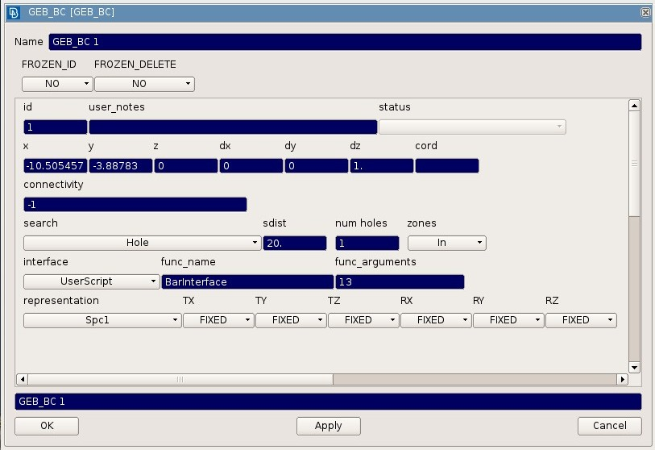
The interface function uses 4 arguments:
The current Generic Entity variable of type object.
The entities given from the representation. These entities will be transferred to the script through a list. Each list entry is of type object.
The entities identified from the search. These entities will be transferred to the script through a list. Each list entry is of type object.
Some user arguments, transferred to the function in the form of a string type variable. The arguments are explicitly defined by the user at the ‘func_arguments’ field.
The representation function uses 3 arguments:
The current Generic Entity variable of type object.
A list that contains other lists. The number of sub-lists is equal to the number of interfaces. Each list entry is of type object.
Some user arguments, transferred to the function in the form of a string type variable.
In the aforementioned example, the function to be executed is named ‘BarInterface’. This function is defined as follows:
BarInterface(GEB_BC, FromRepr, FromSearch, args)
The list ‘FromSearch’ contains all the nodes that lie in the inner/outer zone of the hole. Thelist ‘FromRepr’ contains one ‘Spc1’ node, which is by default located at the x, y, z Generic Entity coordinates. Finally, the string ‘args’ will be the string ‘13’ specified in the ‘func_arguments’ field.
Note that the function must return a non-zero value on success and a zero value on failure. In the latter case the GEB will get a failure status. After the realization of this generic entity, each node identified from the search will be connected to the ‘Spc1’ node with a ‘CBAR’ element.
def BarInterface(GEB_BC, FromRepr, FromSearch, diam):
all_search_nodes = len(FromSearch)
radius = float(diam)/2
area = 3.14*radius**2
#Get the id of the representation node
repr_id = FromRepr[0]._id
#Create a PBAR property
new_prop = base.CreateEntity(constants.NASTRAN, 'PBAR', {"A": area})
for i in range(all_search_nodes):
#Get the id of each search node
search_id = FromSearch[i]._id
#Create the bar
vals = {"N1": repr_id, "N2": search_id, "IPART": new_prop._id, "x1": 1}
base.CreateEntity(constants.PAMCRASH, "BEAM", vals)
The complete source code of this example can be found here Creating Connectors
Note
Press F1 on the ‘func_name’ field to load the user script function.
Note
The number and the type of the input arguments denote the signature of the user function. Thus, after loading, only the functions of a specific signature will be recognized.
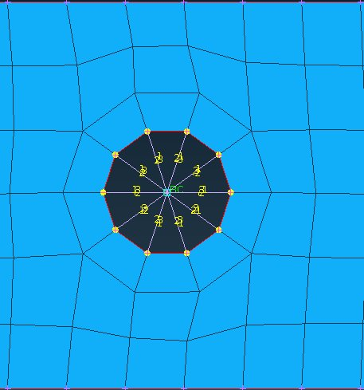
Executing specialized script functions from Connection Manager#
The Connection Manager communicates with four specialized scripting functions that control:
The Connections’ ‘User’ field.
The Connections’ diameter ‘D’.
The PIDs of the RADIOSS springs.
Any other customization.
Updating Connection’s User Field#
To instruct the Connections Manager to auto-fill the non editable ‘User’ column of connections, a user script function can be used. In this approach the Connection Manager will automatically call this function every time a spotweld is applied. The script function can be loaded and specified in the general connections settings (Tools>Settings>Connections), by hitting the F1 key in the ‘Update User Field Function’ field.
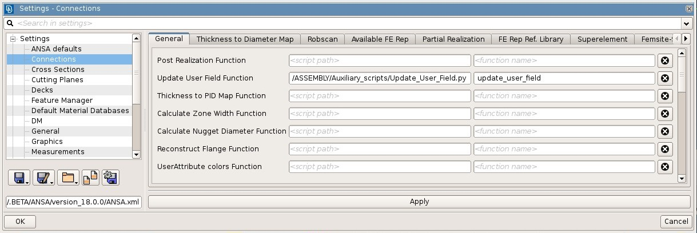
Alternatively, the user can specify its name in the ANSA.defaults, under the variable:
weld_user_field_update = UserPlinkProp
The function’s syntax must be the following:
function(connection)
The input argument of this function is a reference to the entity that is going to be created, making it is easy to extract all necessary information. At the end of the script a string must be returned. A possible use of this function is to display the property id of the newly created plinks in the ‘User’ field:
def UserPlinkProp(connection):
if connection.ansa_type(constants.PAMCRASH) == "PLINK":
ret = connection.get_entity_values(constants.PAMCRASH, ("IPART", ))
return ret["IPART"]
Note
The number and the type of the input arguments denote the signature of the user function. Thus, after loading, only the functions of a specific signature will be recognized.
User Thickness to Diameter Map#
When the diameter ‘D’ of a connection is not prescribed in the diameter field of the Connection Manager, ANSA can auto-assign a diameter value taking into consideration the thickness of the flanges that are connected (provided that the flag ‘Use thickness to Diameter Map’ - when available, is active). There are two alternative methods in order to control the mapping, both specified in the general connections options (or in the ANSA.defaults file):
Through a thickness-diameter table.
Through a user script function.
By default ANSA will follow the thickness-diameter table method, with the default table available in the ANSA.defaults:
thick_spw_diam = 4.00, 1.02, 5.00, 1.78, 6.00
To define a mapping scheme that cannot be described by a table, a user-script function can be used. In this approach, the Connection Manager will automatically call this function every time a spotweld is applied (provided that the flag ‘Use thickness to Diameter Map’ - when available, is active). The script function can be loaded and specified through the general connections settings (Tools>Settings>Connections), by hitting the F1 key in the ‘Function name’ field.
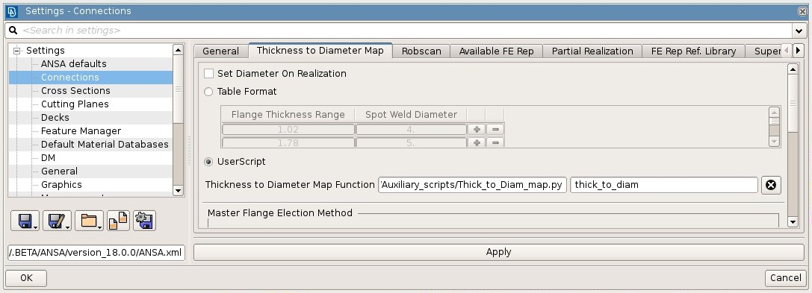
Alternatively, the user can specify its name in the ANSA.defaults, under the variable:
thick_spw_diam = AssignDiameter
The function’s syntax must be the following:
function(thickness)
The input argument is a thickness value while the returned value is the diameter that will be applied:
def AssignDiameter(thickness):
if thickness <= 1:
diameter = thickness
elif thickness > 1 and thickness < 2:
diameter = thickness/4
elif thickness >= 2 and thickness < 3:
diameter = thickness/2
else:
diameter = thickness*2
return diameter
Note
The thickness that is given as input, is calculated according to the ‘Master Flange Election Method’.
Note
The number and the type of the input arguments denote the signature of the thickness to diameter map function. Thus, after loading, only the functions of a specific signature will be recognized.
Updating RADIOSS spring PID#
For RADIOSS WELD FE representation, the user can control the properties that will be generated (SPRING, Type 13) by specifying a map function between the flange thickness and the spring PID. This feature is activated through the “Use Thickness To PID” flag in the FE-representation options. A user script function defined under the general connections options or in the ANSA.defaults can control the mapping. The Connection Manager automatically calls this function every time a spotweld is applied (provided that the flag “Use Thickness to PID map”, is active).
The script function can be loaded and specified in the general connections settings (Window>Settings>Connections), by hitting the F1 key in the ‘Thickness to PID Map Function’ field.
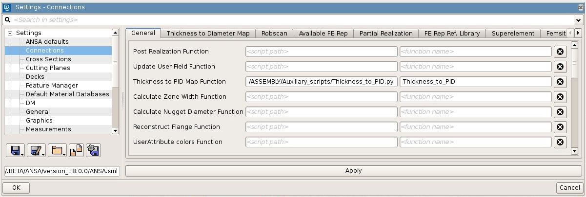
Alternatively, the user can specify its name in the ANSA.defaults, under the variable:
shell_to_spring_pid = DefineSpringId
The function’s syntax must be the following:
Function(shells)
The input argument is a list that contains the projected shells, while as output the function returns a reference to the property that is going to be assigned to the newly created radioss springs. The property can either be created by the function or be any existing one.
def DefineSpringID(shells):
thickness = []
for shell in shells:
prop = shell.get_entity_values(constants.RADIOSS, ("PID", ))
ret_val = prop.get_entity_values(constants.RADIOSS, ("THICK", ))
thickness.append(ret_val['THICK'])
maximum = max(thickness)
if maximum <= 1:
vals = {"Name": "Maximum thickness less than " + str(maximum),
"PID": 500,
"TYPE": "SPR_BEAM 13",
"MASS": 0.5}
ent = base.CreateEntity(constants.RADIOSS, 'PROP/SPR_BEAM', vals)
else:
vals = {"Name": "Maximum thickness greater than " + str(maximum),
"PID": 1000,
"TYPE": "SPR_BEAM 13",
"MASS": 1}
ent = base.CreateEntity(constants.RADIOSS, "PROP/SPR_BEAM", vals)
return ent
The complete source code of this example can be found here Creating Connectors
In this example a different PROP/SPR_BEAM is assigned to each spring, according to the thicknesses of the shells it connects.
Note
The number and the type of the input arguments denote the signature of the user function. Thus, after loading, only the functions of a specific signature will be recognized.
Connection Realization Script Functions#
There are a number of connection-related callbacks that the user can set up in the ANSA defaults. These can be set up in Windows > Settings > Connections > Scripts tab.
The flow of connection realization functions is as follows:
groups = PreRealizationAndGrouping (all_connections)for connection_group in groups:PreRealizationGroupActions (connection_group)Realize (connection_group) → PostRealization (connection)PostTreatment (all_connections)
The pre-realization and grouping function#
The pre-realization and grouping function is the function that is called first and its purpose is to group connections, so that separate global settings can be setup for each group of connections. It uses standard input arguments that are supplied by the Connection Manager in every call.
Input argument |
Description |
|---|---|
cnctns |
All connections that are to be realized. |
The return of the pre-realization and grouping function is a list with groups of connections that should be realized.
The pre-realization group actions function#
The script function used to set global settings that should apply for a whole group of connections, is called pre-realization group actions (due to the fact that it runs before the connection group’s “realization”, through the Connection Manager). The pre-realization group actions function uses standard input arguments that are supplied by the Connection Manager in every call.
Input argument |
Description |
|---|---|
cnctn_group |
A group of connections. These connections will be realized as if they were all selected in the connection manager (or DBBrowser) upon realization. |
The return value of the pre-realization group actions function is None.
The post-realization function#
The script function used for the modification of the connection elements into a custom model, is called post-realization (due to the fact that it runs every time after the connections’ “realization”, through the Connection Manager). The post-realization function uses standard input arguments that are supplied by the Connection Manager in every call.
Input argument |
Description
|
|---|---|
cnctn |
The connection entity currently being processed.
|
projections |
Each entry of this list is a [x, y, z] list containing the coordinates of
the projections of the connection point on each of the connected parts.
The number of entries of this list is equal to the number of the connected
parts.
|
projection_ents |
Each entry of this list is an ANSA entity found at the projection.
The number of entries of this list is equal to the number of connected
parts. If the FE-representation generated is a point-to-point model, then
the list will contain node entities. Otherwise, the list will contain
shell/solid entities.
|
interface_ents |
Each entry of this list is an element entity created as “interface”
element on each connected part. “Interface” elements are those that
connect the “body” element of the connection to the structure
(e.g. in an RBE3-HEXA-RBE3 connection, the interface elements are the
RBE3s). For FE-representations with no interface elements (e.g. RBE2)
this list is empty. The number of entries of this list is equal to the
number of connected parts.
|
body_ents |
Each entry of this list is an element entity created as “body”
element on each connected part. “Body” elements are the main elements
of the FE-representation (e.g. in an RBE3-HEXA-RBE3 connection,the body
element is the HEXA). The number of entries of this list is equal to the
number of connected parts minus one.
|
misc |
This list carries miscellaneous information whenever applicable:
|
The return value of the post-realization function determines the value of the “Error Class” for each connection and signifies the connection modification success or failure. The supported return values and their meaning are listed in the following table:
Return Value |
Description
|
|---|---|
1 |
Success.
The connection will display in its ‘Error Class’ field the name of
the FE-representation specified (e.g. SPIDER2, CBAR, etc.).
Its ‘Status’ will be ‘OK’.
|
0 |
Success.
The connection will display in its ‘Error Class’ field the string
‘Custom FE’.
Its ‘Status’ will be ‘OK’.
|
-1 |
Failure.
The connection failed to reaize
|
The post-treatment function#
The script function used to collect statistics, perform checks, write a log, or set an alternative Fe-Rep Template to the connections that have failed, is called post-treatment (due to the fact that it runs after all the connections’ realizations are completed). The post-treatment function uses standard input arguments that are supplied by the Connection Manager in every call.
Input argument |
Description |
|---|---|
cnctns |
All connections that were initially sent for realization. |
The return value of the post-treatment function is None.
Set-up#
The set-up of any connection realization script function consists of 2 steps:
Loading the script.
Declaring the name of the connection realization script function.
The name of any connection realization function must be declared in order for the Connection Manager to know which function to execute. This declaration is performed through the general connections options, following the path: Windows > Settings > Connections > General.
The connection realization functions that are declared as described, apply to all the connections of the database.
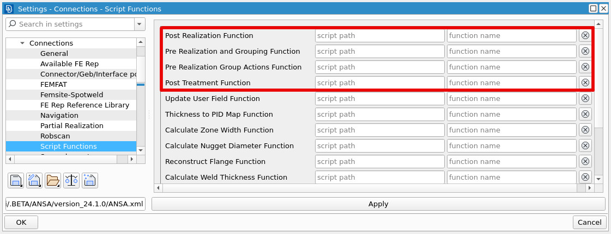
Alternatively, the user can specify the names of the connection realization functions in the ANSA.defaults, under the variables:
post_realization_fn = PostRealizationFunction
post_realization_fn_path = /path_to/realization_functions.py
pre_realization_group_action_fn = PreRealizationGroupActionsFunction
pre_realization_group_action_fn_path = /path_to/realization_functions.py
post_treatment_fn = PostTreatment
post_treatment_fn_path = /path_to/realization_functions.py
pre_realization_and_grouping_fn = PreRealizationAndGrouping
pre_realization_and_grouping_fn_path = /path_to/realization_functions.py
Apart from declaring a global post-realization function, it is also possible to assign a post-realization function in a Connection Template.
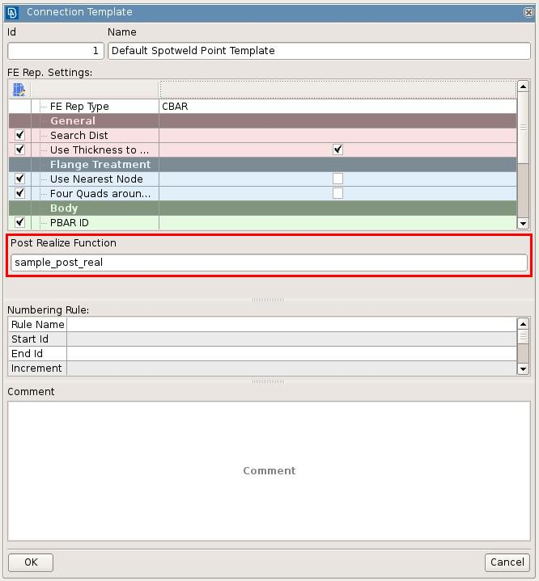
The post-realization function that is assigned on a specific Connection Template, will only be executed upon realization of the connections that are using the Template.
Examples of connection realization functions are shown below:
Example 1
import ansa
from ansa import base
def PostRealization_Example1(cnctn, proj, proj_ents, interfaces, bodies, misc):
flange = 1
for point in proj:
print("Projection on flange", str(flange), ": (", str(point[0]), ",", str(point[1]), ",", str(point[2]), ")")
flange += 1
flange = 1
for ents in proj_ents:
for ent in ents:
type = ent.ansa_type(0)
print("Projection ent on flange", str(flange), ":", type, "ID:", ent._id)
flange += 1
flange = 1
for ents in interfaces:
for ent in ents:
type = ent.ansa_type(0)
print("Interface ent on flange", str(flange), ":", type, "ID:", ent._id)
flange += 1
flange = 1
for ents in bodies:
for ent in ents:
type = ent.ansa_type(0)
print("Body ent on flange", str(flange), ":", type, "ID:", ent._id)
flange += 1
for i_item, item in enumerate(misc):
print("Misc item", str(i_item+1), "; Type:", str(item.__class__) "; Value:", str(item))
The complete source code of this example can be found here Post-Realization 1
Example 2
import ansa
from ansa import base
from ansa import constants
import math
def PostRealization_Example2(cnctn, proj, proj_ents, interfaces, bodies, misc):
D = float(misc[0])
A = math.pi*D**2/4
I1 = I2 = math.pi*D**4/64
J = math.pi*D**4/32
existing_pbeams = base.CollectEntities(constants.NASTRAN, None, "PBEAM")
prop_id = False
for prop in existing_pbeams:
tokens = prop._name.split("=")
if len(tokens) > 1 and tokens[1] == str(D):
prop_id = prop._id
if not prop_id:
vals = {"Name": "SPW_SPIDER_D=" + str(D), "A(A)": A, "I1(A)": I1, "I2(A)": I2, "J(A)": J}
new_pbeam_ent = base.CreateEntity(constants.NASTRAN, "PBEAM", vals)
prop_id = new_pbeam_ent._id
for ents in bodies:
for ent in ents:
if ent.ansa_type(constants.NASTRAN) == "CBAR":
ret = base.ChangeElemType(constants.NASTRAN, ent, target_name="CBEAM", pid=prop_id)
if ret:
return -1 #Failure. Erase-FE.
The complete source code of this example can be found here Post-Realization 2
Example 3
With this setup connections are sent for realize at 2 groups. One contains connections with Num of points around hole = 8 and the other contains connections with Num of points around hole = 16. For each group before Realize the Pre-Realize function is called, so user can set the Mesh parameters needed for each case.
import ansa
from ansa import base
from ansa import constants
from ansa import connections
from ansa import mesh
def get_num_of_points_around_hole(connection):
num_nodes_around_hole = base.GetEntityCardValues(constants.NASTRAN, connection, ['Num of points around hole']).get('Num of points around hole','')
if num_nodes_around_hole == "":
return 0
return int(num_nodes_around_hole)
def PreRealizeFunction(connection_group):
num_nodes_around_hole = get_num_of_points_around_hole(connection_group[0])
if num_nodes_around_hole == 8:
mesh.SetMeshParamTargetLength("absolute", 1.0)
else:
mesh.SetMeshParamTargetLength("absolute", 4.0)
def RealizationGrouping(connections):
groups = []
femfat_spots_with_16_num = []
femfat_spots_with_8_num = []
for cnctn in connections:
num_nodes_around_hole = get_num_of_points_around_hole(cnctn)
if num_nodes_around_hole == 8:
femfat_spots_with_8_num.append(cnctn)
else:
femfat_spots_with_16_num.append(cnctn)
groups.append(femfat_spots_with_8_num);
groups.append(femfat_spots_with_16_num);
return groups
Note
The post-realization function applies to all the connection points, connection lines and surfaces and to all the FE-representations, except from the SPIDER.
Note
In order to have the same connection realization functions every time ANSA is launched, the scripts should be loaded through an ANSA_TRANSL.py file.
Includes Configurator#
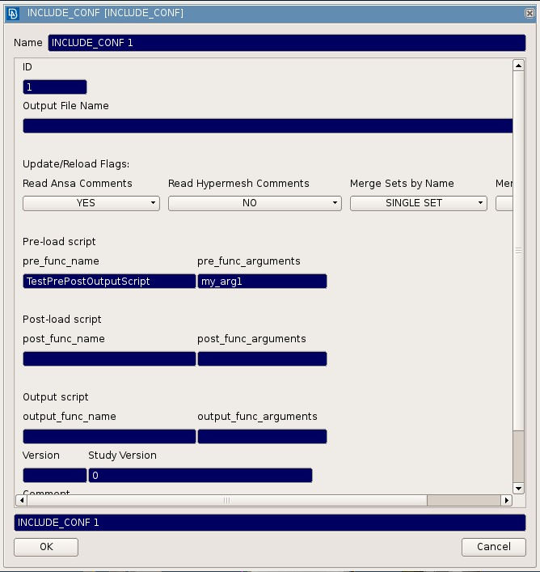
By using the Include Configurations, script functions can be automatically executed when:
Updating or reloading a configuration. A script can be executed before (pre_func_name) and/or after (post_func_name) loading the configuration.
Outputting a configuration (output_func_name).
The above script functions must have specific arguments:
function(conf, arg)
where:
conf is the Includes Configuration entity.
- arg is a dictionary that is automatically created, having the following entries:
arg[“UserArgs”] is the string that is inputted by the user in the pre, post, or output_func_arguments field in the configuration’s card.
arg[“Include”] is an Include entity that can be created when updating/reloading a configuration. If the user assigns entities to this Include, then it will be added to the configuration. If this include remains intact, then it is discarded from the database. This entry is not available for the Output script. The user can add as many other entries as needed in the ‘arg’ dictionary.
The return value of the pre and post functions needs to be of boolean type.
The following sample script prints the user argument in the Ansa Info window and reports the contents of each Include of the configuration in a log file:
import ansa
from ansa import base
def TestPrePostOutputScript(conf, arg):
if arg["UserArgs"]:
print("arg['UserArgs']:", arg["UserArgs"])
all_types_of_ents = base.TypesInCategory (0, "__ALL_ENTITIES__")
with open("include_log.txt", 'w') as f:
includes_of_configuration = base.GetConfigurationIncludes(conf)
for incl in includes_of_configuration:
f.write("\n***************\nINCLUDE " + incl._name + ":\n")
for type in all_types_of_ents:
ents = CollectEntities (0, incl, type)
f.write(len(ents) + " " + type + "s\n")
The complete source code of this example can be found here Test Output Script
Results Mapper#
Pre - Post mapping functions#
In the User Script tab of the Results Mapper window, you can specify a series of Python functions to be executed automatically, immediately after the input of the source file (post_input_func_name), as the first step (pre_func_name) or as the last step (post_func_name) of the mapping application.
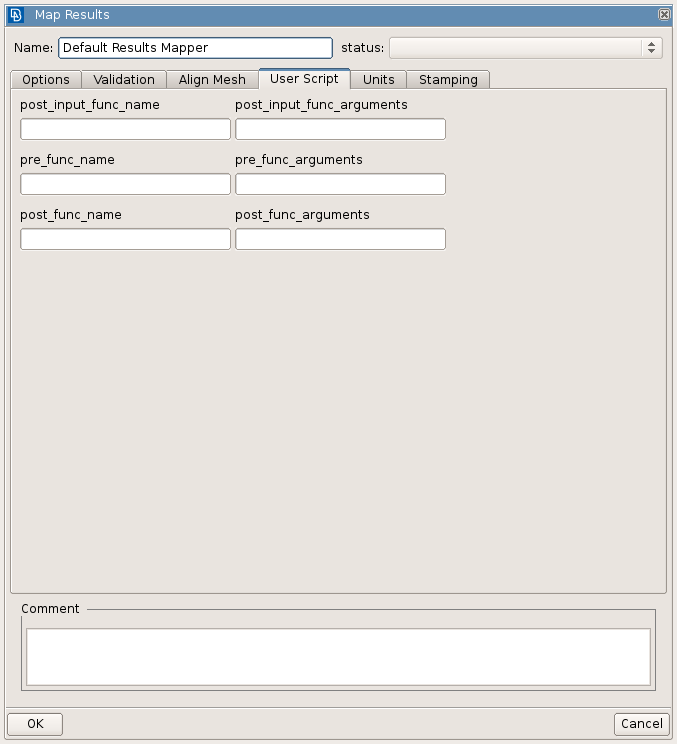
These functions must have specific arguments:
post_input_func(path_name, args)
where:
path_name, is the full path of the input file read.
args, is a string that contains the arguments that have been defined by the user in the “post_input_func_arguments” field.
pre_map_func(resmap, src_entities, trg_entities, args)
post_map_func(resmap, src_entities, trg_entities, args)
where:
resmap, is the Results Mapper entity.
src_entities, is a list that contains all the entities of the source file (i.e. entities that would be created in ANSA if the file was inputted).
trg_entities, is a list that contains:
the entities of the current (target) part, that have been identified based on the specified connectivity and search pattern.
the entities that have been created from the results mapper (e.g. pressures, temperatures etc.). These are available only for the post map function.
args, is a string that contains the arguments that have been defined by the user in the “pre_func_arguments” or the “post_func_arguments” fields.
In all cases the functions must return True or 1 on success, otherwise an error message will be printed in the Ansa Info window.
A pre-map function application could be the case where the last Transformation Matrix is already known and its values reside in a text file, like in the following example:
# Tranformation matrix
0.86597526 -0.01000431 -0.49998453 0.
0.010116526 0.99994516 -0.0024861349 0.
0.4999826 -0.00290507 0.86603 0.
299.17157 148.64174 1460.384 1.
A pre-map function could extract the Transformation Matrix from this file and assign it to the Results Mapper:
from ansa import constants
def pre_map_func(resmap, src_entities, trg_entities, args):
transfo_fields = {}
with open('transfo_info.txt', 'r') as f:
row = 1
for line in f:
if line.startswith('#'):
continue
tokens = line.split()
for col, token in enumerate(tokens):
transfo_fields[f'T{row}{col+1}'] = token
row += 1
resmap.set_entity_values(constants.ABAQUS, transfo_fields)
return True
User Defined Mapping Type#
When the desired Mapping Type is not directly supported by ANSA, then the User Defined mapping option can be used.
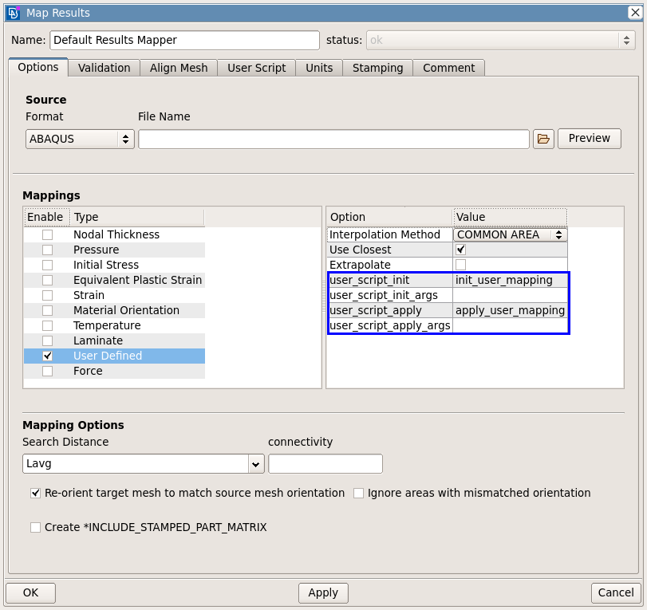
Here you have to specify two functions.
The first is the “user_script_init”, which will be executed initially and is responsible for storing the needed
mapping data, through the API function ansa.base.RegisterMappingData().
The second is the “user_script_apply”, which will be executed for each mapping that has been registered previously,
and is responsible for creating new entities, based on the mapped data that can be retrieved by using the API functions
ansa.base.RetrieveMappedData() and ansa.base.RetrieveTagValue().
These functions must have specific arguments:
user_script_init(ents, args)
where:
ents, is a list that contains all the entities of the source file.
args, is a string that contains the arguments that have been defined by the user in the “user_script_init_args” field.
user_script_apply(ents, label, tag, args)
where:
ents, is a list that contains all the entities of the source file.
label, is a string that contains the label that has been registered for this specific mapping.
tag, is an object that holds all the group information (tag group) that has been registered for this specific mapping.
args, is a string that contains the arguments that have been defined by the user in the “user_script_apply_args” field.
In all cases the functions must return True or 1 on success, otherwise the Results Mapping wil fail and an error message will be printed in the Ansa Info window.
Note
You can find more information, as well as a complete example of those functions on the documentation of the aforementioned API functions. i.e. ansa.base.RegisterMappingData(), ansa.base.RetrieveMappedData() and ansa.base.RetrieveTagValue().
USER Source File Format#
When the Source File Format cannot be directly read by ANSA, then the USER Format option can be used.
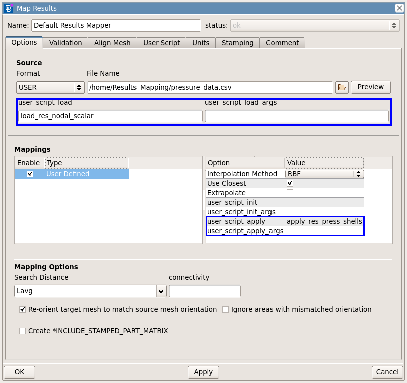
In this case, the only available mapping type is the “User Defined” and you have to define two Python callback functions.
The first one is the “user_script_load”, which is responsible for parsing the source file, as well as registering the
respective mapping data, through the API function ansa.base.RegisterMappingData().
The second one is the “user_script_apply”, which has been described on the previous section.
These functions must have specific arguments:
user_script_load(filename, args)
where:
filename, is the full path of the source file specified on the File Name field.
args, is a string that contains the arguments that have been defined by the user in the “user_script_load_args” field.
The function must return True or 1 on success, otherwise the Results Mapper wil fail and an error message will be printed in the Ansa Info window.
As an example, suppose that the source file contains coordinates and pressure values as shown below:
#X, Y, Z, P
4.4585, 2.4231, 1.2545, 10.5
1.5818, 3.0796, 1.2444, 10.5
1.8719, 3.0817, 1.2455, 7.93
The load function will parse those data, create grid entities and register the pressure values, while the apply function will map the pressure results to NASTRAN PLOAD4 entities that refer to shell elements.
from ansa import base
from ansa import constants
def load_res_nodal_scalar(filename, args):
with open(filename, 'r') as file:
for line in file:
if line.startswith('#') or line.count(',') != 3: continue
x, y, z, p = (token.strip() for token in line.split(','))
node = base.CreateEntity(constants.NASTRAN, 'GRID', {'X1': x, 'X2': y, 'X3': z})
base.RegisterMappingData(node, 'CSV_data', 1, 'scalar', 'values', p)
return True
def apply_res_press_shells(ents, label, tag, args):
for ent in ents:
if base.GetEntityType(constants.NASTRAN, ent) != 'SHELL':
continue
if label == 'CSV_data':
ret = base.GetEntityCardValues(constants.NASTRAN, ent, ('EID',))
magn = base.RetrieveMappedData(ent, label, 1, tag, 'values')
fields = {'by': 'element', 'EID': ret['EID'], 'P1': magn, 'SID': 1}
base.CreateEntity(constants.NASTRAN, 'PLOAD4', fields)
Note
The complete source code of this example can be found under the ANSA installation directory: “scripts/Auxiliaries/CollectionMapScripts.py”.
Input - Output Pre/Post functions#
The user is able to run a script function just before and/or after the input or the output of a deck file. The function is defined in the input or the output parameters window and is executed automatically before or after the ANSA input or output process.
The pre and post input and output functions must have specific arguments:
PreInput(input_filename, input_function_args)
PostInput(input_filename, input_function_args)
PreOutput(output_filename, output_function_args)
PostOutput(output_filename, output_function_args)
where:
input_filename or output_filename, is the full path to the selected deck file.
input_function_args or output_function_args, is a set of auxiliary user defined arguments.
In all cases the function must return True or 1 on success, otherwise an error message will be printed in the Ansa Info window.
In order to set up the Pre/Post Input Script and the Pre/Post Output Script functions, the corresponding scripts must be loaded prior to them. The ‘Pre/Post func name’ must be declared so that ANSA knows which function to execute. Hit F1 in the ‘Pre/Post func name’ field to launch the ‘Select script function’ window and load the script. Pick the relative function and press OK to assign its name in the relevant field. In the ‘Pre/Post func args’ field, type any string representing user defined data. If no auxiliary data is needed, leave the field blank.
Note
The number and the type of the input arguments denote the signature of the user function. Thus, after loading, only the functions of a specific signature will be recognized.
Example of a Post Input Script
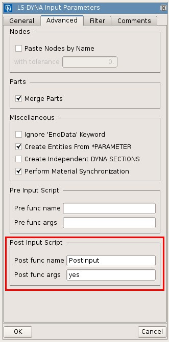
A Post Input Script is executed only after all the physical data have been imported in ANSA. A simple example of such a function could be the reading of deck file comment lines, of specific syntax, that hold information not read by ANSA, like ‘Model Id’, ‘LoadCase name’ etc. Through the ‘Post func args’ the script function will be notified to read these lines, by typing ‘yes’, and then they will be added to the General Comment.
import ansa
from ansa import base
def PostInput(filename, post_func_args):
if post_func_args != "yes":
return True
with open(filename, 'r') as f:
for line in f:
if 'Model Id' in line:
tokens = line.split(':')
model_id = tokens[1].letters()
elif 'LoadCase Name' in line:
tokens = line.split(':')
loadcase_name = tokens[1].letters()
comment = "Model Id: " + model_id + "\n" + "LoadCase: " + loadcase_name
base.SetGeneralComment(comment)
return True
The complete source code of this example can be found here Post Input Script
Example of a Pre Output Script
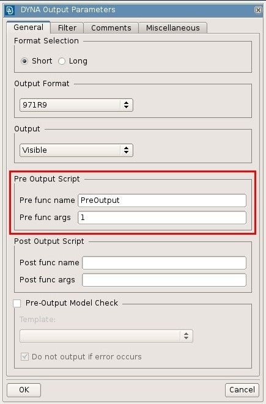
A Pre Output Script is executed just before the proccess of exporting all the physical data. The following example shows a Pre output function which assigns a specific Material ID to all the Shell Properties with Thickness equal to 1. In this case the desired Material ID will be provided through the ‘Pre func args’ field.
import ansa
from ansa import base, constants
def PreOutput(filename, pre_func_args):
props = base.CollectEntities(constants.LSDYNA, None, 'SECTION_SHELL')
for prop in props:
if base.GetEntityCardValues(constants.LSDYNA, prop, ('T1', ))['T1'] == 1.0:
base.SetEntityCardValues(constants.LSDYNA, prop, {'MID': int(pre_func_args)})
return True
The complete source code of this example can be found here Pre Output Script
Example of a Post Output Script
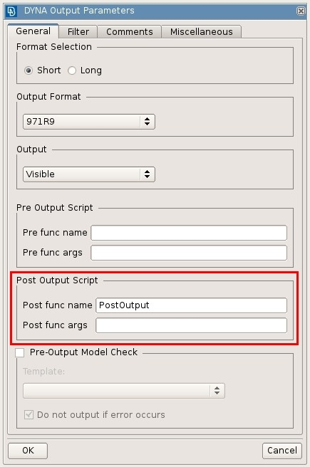
A Post Output Script is executed only after all the physical data have been exported. The user can use a Post output function in order to add comments to the exported deck file, written in a specific syntax, suitable for reading by another software. In this case no ‘Post func args’ needs to be defined.
import os
def PostOutput(filename, post_func_args):
fw = open(filename + "_temp", "w")
fw.write("$ Some user comments")
fr = open(filename, "r")
for line in fr:
fw.write(line)
fw.close()
fr.close()
os.rename(filename + "_temp", filename)
return True
The complete source code of this example can be found here Post Output Script
ANSA defaults#
After defining the pre and post input and output functions, you can find information about the functions in the respective ANSA defaults values:
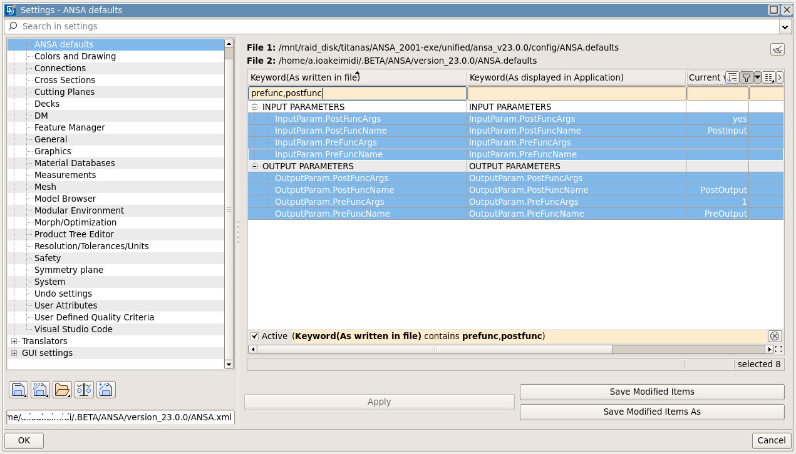
You can also set the pre and post input and output functions through the ANSA API using the function ansa.base.BCSettingsSetValues(), like so:
from ansa import base
def main():
base.BCSettingsSetValues({
'InputParam.PostFuncName': 'PostInput', 'InputParam.PostFuncArgs': 'yes',
'OutputParam.PreFuncName': 'PreOutput', 'OutputParam.PreFuncArgs': '1',
'OutputParam.PostFuncName': 'PostOutput', 'OutputParam.PostFuncArgs': ''})
Material Synchronization#
ANSA offers the capability to define a couple of User Material Synchronization functions, which can apply specific actions for different materials between decks.
These functions will be executed when a Material Synchronization takes place, either manually through the respective option on the Properties list, or automatically when a file Input takes place.
The definition of the functions can be done through the Materials Mapping Window (Materials -> Map Materials), where the path to a Python file and the function names can be set.
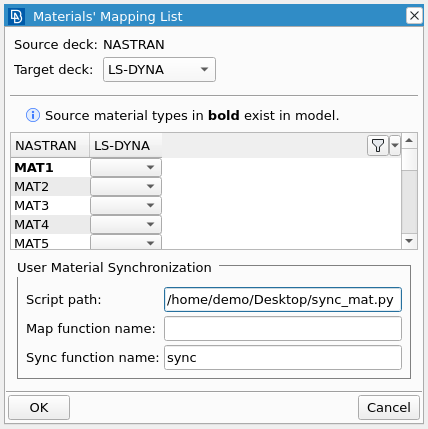
Note
The values of those fields are also saved on the ANSA.defaults file, under the user_mat_synchronization_script, user_mat_mapping_func and user_mat_synchronization_func fields.
Both the defined functions must have specific arguments, as those are automatically provided by ANSA.
map_func(source_mat, target_deck, *args, **kwargs)
Input argument |
Description |
|---|---|
source_mat |
The source material entity object. |
target_deck |
The deck constant. |
*args |
Reserved for future usage. |
**kwargs |
Reserved for future usage. |
The map_func should return a string containing the target Material type.
sync_func(source_mat, target_mat, *args, **kwargs)
Input argument |
Description |
|---|---|
source_mat |
The source material entity object. |
target_mat |
The target material entity object. |
*args |
Reserved for future usage. |
**kwargs |
Reserved for future usage. |
The contents of the sync_func can be any custom user actions in order to synchronize the materials. Typically, a combination of getting values from the source material and respectively setting values to the target material should take place.
Furthermore, the target material can be automatically selected via using the map_func according to a user defined criterion based on the data of the source material for example.
The first example showcases the translation of a Nastran MAT1 material with MATT1 tabular data (T(E)_T1 and T(NU)_T1), to an Abaqus Isotropic material:
from ansa import base
from ansa import constants
def _get_values_from_source_mat(source_mat: base.Entity, data: list, verbose: bool) -> bool:
if not base.GetEntityType(constants.NASTRAN, source_mat):
if verbose: print('NASTRAN MAT1 is needed!')
return False
fields = ('MATT1', 'E', 'T(E)_T1', 'NU', 'T(NU)_T1')
ret_fields = base.GetEntityCardValues(constants.NASTRAN, source_mat, fields)
if ret_fields['MATT1'].strip() == 'NO':
if verbose: print('Temperature dependency not defined (MATT1).')
return False
if ret_fields['T(E)_T1']:
ent = base.GetEntity(constants.NASTRAN, 'TABLEM', ret_fields['T(E)_T1'])
_read_tablem_nas(ent, data)
elif ret_fields['E']:
data.append(ret_fields['E'])
else:
return False
if ret_fields['T(NU)_T1']:
ent = base.GetEntity(constants.NASTRAN, 'TABLEM', ret_fields['T(NU)_T1'])
_read_tablem_nas(ent, data)
elif ret_fields['NU']:
data.append(ret_fields['NU'])
else:
return False
return True
def _read_tablem_nas(ent: base.Entity, data: list) -> None:
curve_data = base.GetLoadCurveData(ent)
data.append(curve_data)
def _set_values_to_target_mat(source_mat: base.Entity, target_mat: base.Entity, data: list, verbose: bool) -> bool:
"""Setup the ABAQUS Isotropic material"""
if not base.GetEntityType(constants.ABAQUS, target_mat):
if verbose: print('ABAQUS MATERIAL is needed!')
return False
if not isinstance(data[0], list):
if verbose: print('No TABLEM found in T(E)_T1 field.')
return False
# Write elasticity
abqt_data = []
for i in range(0, len(data[0])):
temp = []
for j in range(0, 2):
if isinstance(data[j], list):
temp.append(data[j][i][1])
else:
temp.append(data[j])
temp.append(data[0][i][0])
abqt_data.append(temp)
eltab = base.CreateLoadCurve('DEPENDENCY_DATA_TABLE', {})
base.SetLoadCurveData(eltab, abqt_data)
dt = eltab.get_entity_values(constants.ABAQUS, ('DID',))['DID']
mat_vals = {'Name': source_mat._name,
'*ELASTIC': 'YES',
'ELASTIC_TYPE': 'ISOTROPIC',
'DEP_ELAST': 'YES',
'DATA TABLE ELAST': dt}
target_mat.set_entity_values(constants.ABAQUS, mat_vals)
def sync(source_mat: base.Entity, target_mat: base.Entity, *args, **kwargs) -> None:
data = []
verbose = False
status = _get_values_from_source_mat(source_mat, data, verbose)
if status:
_set_values_to_target_mat(source_mat, target_mat, data, verbose)
else:
if verbose: print('Material could not be translated!')
The complete source code of this example and a sample ANSA database can be found here.
The second example refers to the translation of Abaqus materials to LS-DYNA orthotropic or hyperelastic materials, depending on the data of the source material.
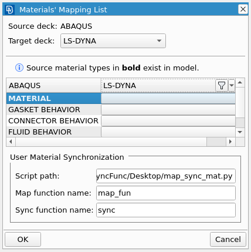
from ansa import base
from ansa import constants
def _get_values_from_source_mat(source_mat: base.Entity, data: list, verbose: bool) -> str:
if not base.GetEntityType(constants.ABAQUS, source_mat):
if verbose: print('ABAQUS MATERIAL is needed!')
return ''
fields = ('Elasticity', '*ELASTIC', 'DEP_ELAST', 'ELASTIC_TYPE', 'E1', 'E2', 'v12',
'*HYPERELASTIC', 'method hyperel', 'POISSON', 'C10', 'C01', 'D1')
ret_fields = base.GetEntityCardValues(constants.ABAQUS, source_mat, fields)
target_mat_type = ret_fields['Elasticity'].strip()
if target_mat_type == 'ELASTIC':
if ret_fields['*ELASTIC'].strip() == 'YES':
if ret_fields['DEP_ELAST'].strip() == 'NO' and ret_fields['ELASTIC_TYPE'].strip() == 'ENG CONST':
if ret_fields['E1'] and ret_fields['E2'] and ret_fields['v12']:
data.append(ret_fields['E1'])
data.append(ret_fields['E2'])
data.append(ret_fields['v12'])
target_mat_type = 'ORTHOTROPIC'
else:
if verbose: print('Missing data (e.g E2, v12).')
return ''
elif ret_fields['ELASTIC_TYPE'].strip() == 'ISOTROPIC':
target_mat_type = 'ISOTROPIC'
if ret_fields['DEP_ELAST'].strip() == 'YES':
if verbose: print('Please check if the script supports DEPENDENCY DATA TABLE')
return ''
else:
if verbose: print('Please check if the script supports the current ELASTIC_TYPE')
return ''
else:
if verbose: print("Use material with *ELASTIC = YES")
return ''
elif target_mat_type == 'HYPERELASTIC' and ret_fields['*HYPERELASTIC'].strip() == 'YES':
if ret_fields['method hyperel'].strip() == 'MOONEY-RIVLIN':
data.append(ret_fields['POISSON'])
data.append(ret_fields['C10'])
data.append(ret_fields['C01'])
else:
if verbose: print('Missing data (e.g C10, C01).')
return ''
else:
if verbose: print('Use material with proper Elasticity type')
return ''
return target_mat_type
def map_fun(source_mat: base.Entity, target_deck: int, *args, **kwargs) -> str:
src_type_abaqus = base.GetEntityType(constants.ABAQUS, source_mat)
if src_type_abaqus != "MATERIAL":
return ""
data = []
verbose = True
target_mat_type = _get_values_from_source_mat(source_mat, data, verbose)
if not target_mat_type:
if verbose: print("Check the data of the source material")
return ""
if target_deck != constants.LSDYNA:
if verbose: print("No proper taget deck found. Update the script properly.")
return ""
if target_mat_type == 'ORTHOTROPIC':
return "MAT2O MAT_ORTHOTROPIC_ELASTIC"
elif target_mat_type == 'HYPERELASTIC':
return "MAT27 MAT_MOONEY-RIVLIN_RUBBER"
else:
return "MAT1 MAT_ELASTIC"
def _set_values_to_target_mat(source_mat: base.Entity, target_mat: base.Entity, data: list, verbose: bool) -> None:
# Setup the LSDYNA material
target_deck = constants.LSDYNA
target_mat_type = base.GetEntityType(target_deck, target_mat)
if target_mat_type == "MAT1 MAT_ELASTIC":
mat_vals = {'Name': source_mat._name}
elif target_mat_type == "MAT2O MAT_ORTHOTROPIC_ELASTIC":
mat_vals = {'Name': source_mat._name,
'EB': data[1],
'PRBA': data[2]}
elif target_mat_type == "MAT27 MAT_MOONEY-RIVLIN_RUBBER":
mat_vals = {'Name': source_mat._name,
'PR': data[0],
'A': data[1],
'B': data[2]}
else:
if verbose: print("Please select LSDYNA deck!")
return
target_mat.set_entity_values(target_deck, mat_vals)
def sync(source_mat: base.Entity, target_mat: base.Entity, *args, **kwargs) -> None:
data = []
verbose = False
status = _get_values_from_source_mat(source_mat, data, verbose)
if status:
_set_values_to_target_mat(source_mat, target_mat, data, verbose)
if verbose: print('Material mapping succeeded')
else:
if verbose: print('Material could not be translated!')
The complete source code of this example and a sample ANSA database can be found here.
Handling Scripts From GUI#
General#
Basic actions such as loading, parsing or executing user defined functions, can be carried out in ANSA in 3 distinct ways. Through the Script menu, the command window and the Script Editor. This chapter focuses on the description of the first two along with other useful functionalities.
Loading Scripts on ANSA startup#
During ANSA startup, ANSA searches for a <layout_name>_TRANSL.py file on some specific locations and automatically loads it on the Scripts Manager. The name of the Python file that is searched for, depends on the selected layout. For example, if the ANSA layout has been selected, then an “ANSA_TRANSL.py” file is searched, or if the CFD layout has been selected, then a “CFD_TRANSL.py” file is searched.
Note
More details about the locations of the TRANSL files, can be found on Appendix I of the ANSA User’s Guide.
The type of code that usually goes into the <layout_name>_TRANSL.py is imports to scripts or apps that the ANSA users would like to always have available in every ANSA session. In addition, CAD translation functionality and post-realization functions may be included.
<layout_name>_TRANSL.py example#
In the following example, a typical TRANSL file is shown, where scripts from different modules are loaded into ANSA on start up. For every one of these scripts, a button is created in the User Script Buttons Menu
import sys
import ansa
from ansa import betascript
#----------Load Python Scripts---------
sys.path.append('./')
import my_functions
#-------Load Python Obfuscated---------
ansa.ImportCode('./my_binary_functions.pyb')
#-------Load Legacy Betascripts--------
@ansa.session.defbutton('BETA Scripts', 'Pluto')
def my_bs_function():
betascript.LoadExecuteFunc('MyBSFunction.bs', 'main')
The complete source code of this example can be found here ANSA_TRANSL example
Running Scripts without GUI#
Using the ‘-exec’ flag#
For running ANSA in batch mode, the user is able to use the exec flag. Each time the exec flag is used, it is followed by a script command. The syntax of the commands is platform dependent and therefore special attention must be given to the differences between Windows and Unix systems. In general, a script must be initially loaded and then executed.
Some examples of calling functions through the command line can be seen below.
Calling a function to be loaded into ANSA through the ANSA_TRANSL.py module, requires the -exec option.
ansa -exec "foo()"
Calling a function from an external module to be loaded into ANSA, requires an additional -exec statement.
ansa -exec "load_script: '/home/user/MyFunctions.py'" -exec "foo()"
In order to launch ANSA without opening the GUI, the additional statement of -nogui can be used.
ansa -exec "load_script: '/home/user/MyFunctions.py'" -exec "foo()" -nogui
You can also pass arguments to the function, by simply enclosing them in the function’s parentheses.
ansa -exec "load_script: '/home/user/MyFunctions.py'" -exec "foo('Hello World', 4)" -nogui
If the “foo” function contains optional (e.g. a=1) or variable arguments (e.g. *args), then the command line -execscript should be used.
ansa -execscript "/home/user/MyFunctions.py|foo('Hello World', 4, 10)" -nogui
Interacting with native CAD files#
General#
This chapter describes a way of exploiting useful cae information like the property or the material name, as well as orientation information that have been defined inside native CAD files (Catia, NX, Jtopen, ProE). However, due to the binary format of CAD files, it is difficult for a preprocessor to receive and use automatically and efficiently these data. Nevertheless, the evolution of cad translators allows the recognition of several of these features and consequently provides the capability to use them in any study. ANSA has access to some of these features through the ANSA_TRANSL CAD_Translate function and specific scripting commands.
Reading the attributes of cad files (CATIA, NX, ProE)#
By default, during the cad translation, any part or property attributes are written as comments under the ANSAPART or property comment field. If additional attributes of other entities (usually CURVEs or POINTs) have to be extracted, then the statement ‘read_attributes’ has to be used. The attributes are written in the following form:
<ATTRIBUTE NAME>:<ATTRIBUTE VALUE>
The following script reads the comment field of the ANSAPART, as it was written during the cad translation, and prints some attribute values.
from ansa import base
from ansa import constants
from ansa import cad
def CAD_Translate():
ents = base.CollectEntities(constants.NASTRAN, None, 'ANSAPART')
lines = ents[0]._comment.split("\n")
for line in lines:
m = line.split(":")
attribute_name = m[0].strip()
if attribute_name == "PartNumber":
module_id = m[1].strip()
print(module_id)
elif attribute_name == "Revision":
version = m[1].strip()
print(version)
The complete source code of this example can be found here Read ANSAPART comment
Note
The function GetNextFileLine cannot read the cad files headers and attributes.
Handling the catia properties#
ANSA handles in a special way the names of Geometrical Sets and PartBodies of Catia. These names are interpreted as ANSA property names and thus they can be treated during the translation of Catia files. Suppose that the CAD designer needs to create auxiliary geometric entities (FACEs), which actually don’t mean anything to the CAE user. These entities are positioned to a Geometrical Set called ‘Auxiliaries’. Also, another PartBody named ‘Bolts’ includes all the bolts of the current part. An ANSA_TRANSL could be used in order to delete the unnecessary created properties.
from ansa import base, constants
def CAD_Translate{
to_del = []
pshells = base.CollectEntities(constants.NASTRAN, None, "PSHELL")
for pshell in pshells:
if pshell._name in ("Bolts", "Auxiliaries"):
to_del.append(pshell)
base.DeleteEntity(to_del, True)
The option Create log file (-log) of cad translator creates a log file named as: <filename_number.log>. The user has access to this file through the function TranslatorLogFile. The function accepts no arguments and returns an integer. Having this integer the user can append any text in the created log file:
from ansa import base, constants, cad
def CAD_Translate:
fid = cad.TranslatorLogFile()
pshells = base.CollectEntities(constants.NASTRAN, None, "PSHELL")
no_pshells = str(len(pshells))
fid.write("The file contains " + no_pshells + " PSHELL properties")
The above code appends at the end of the log file a message, regarding the number of the created PSHELL properties.
The “Extra Options” field of Cad Translator#
Extra Options (-user options) is used in conjunction with a built in script function called ansa.session.ProgramArguments().
When the latter is called, it returns all options used for the translation of the cad files,
including the user options that were written in the Extra Options field. In this way, the user can signal
to ANSA_TRANSL the execution of a specific code. Suppose that the user would like to skin or to offset the Catia files.
Since such options are not supported in the translator, he could pass some user defined options, through the Extra Options,
in order to be read by an ANSA_TRANSL. The options could be either ‘skin’ or ‘link’.
from ansa import base, session
def CAD_Translate():
args = session.ProgramArguments()
for arg in args:
if 'skin' in arg:
base.Skin(1, 0, 3, 1, 0, 0, 5)
elif 'link' in arg:
base.OffsetLink("0.5")
Interacting with the Checks Manager#
Introduction#
As the number of CAE simulation analyses is constantly increasing and the complexity of CAE modeling is getting higher, the need for tools to be able to check the integrity of models becomes higher. Following this demand, preprocessors are trying to include as many integrated checks as possible, in order to explore the definition of models and discover invalid definitions that will certainly lead to unsuccessful simulations. ANSA, following that necessity, supports a great number of checks that cover both general and solver-specific needs. However, it is almost impossible to cover all the use cases of every solver, discipline or customer. Thus, ANSA has also developed a process which is based on user script functions, that allows development of any custom check.
Built-in Checks#
At first, let’s demonstrate how a built-in Check can be executed through the API.
Every single Check that exists on ANSA’s Checks Manager, has a dedicated API function which can be found on
the ansa.base module, specifically under base.checks.
For the purposes of this demonstration suppose that we want to execute the Penetration > Intersections check.
Executing an ANSA Check#
In order to acquire the Check object, the function ansa.base.checks.penetration.Intersections has to be used.
Executing this function will essentially return an object of the class ansa.base.Check.
Having acquired the Check object, the respective Check options can be modified, before executing the Check itself.
In the case of the Intersections Check, there is one available option which can either be found on the function’s documentation or on the Checks Manager.
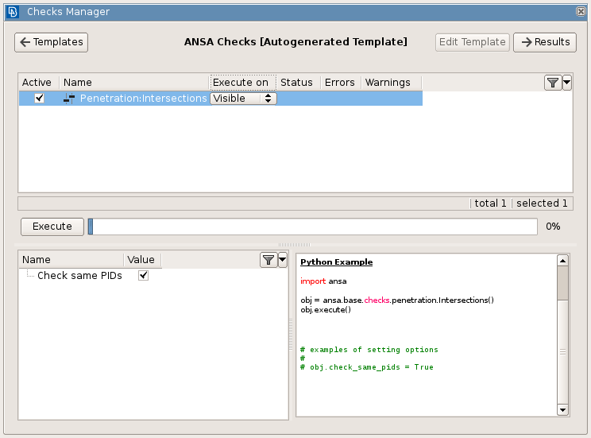
The Check can then be executed as follows:
from ansa import base
def main():
obj = base.checks.penetration.Intersections()
obj.check_same_pids = False
results = obj.execute(exec_mode=base.Check.EXEC_ON_VIS)
There are a few arguments that can be provided to the ansa.base.Check.execute() function, declaring the
entities where the Check will be executed on, as well as options regarding the Checks Manager.
Identifying and Fixing the Results#
After executing the Check, its results are being returned in the form of ansa.base.CheckReport() objects.
Those objects can be iterated, in order for all the erroneous entities to be collected, or to be automatically fixed when possible.
A complete example is shown below:
from ansa import base
def main():
obj = base.checks.penetration.Intersections()
obj.check_same_pids = False
results = obj.execute(exec_mode=base.Check.EXEC_ON_VIS, report=base.Check.REPORT_NONE)
error_entities = []
for check_report in results:
for issue in check_report.issues:
# Collect the errorneous entities
for entity in issue.entities:
error_entities.append(entity)
# Try to automatically fix the errors
if issue.has_fix == True:
try:
issue.try_fix(False)
except RunTimeError:
print('Could not fix issue:', issue.description)
Extracting information about the errors#
The Checks Manager window can often contain some extra columns with additional information about the error that occurred.
We can extract the values of those fields as seen below:
from ansa import base
def main():
obj = base.checks.general.Contacts()
results = obj.execute()
for result in results:
print(result.description)
for header in result.issues:
print(header.description)
for issue in header.issues:
print(issue.description)
print(getattr(issue, "Depth(absolute)", ""))
print(getattr(issue, "Depth(thickness ratio)", ""))
User Defined Checks#
Apart from executing built-in checks, ANSA also provides the capability to define custom Checks.
The following chapters will describe the creation of a check which will identify PSHELL, PSOLID and PBEAM properties of NASTRAN deck, whose names contain blank spaces or special characters defined by the user. The fix will replace the special characters with underscore characters.
Creation of the User Check#
In order to integrate a custom Check inside the Checks Manager, the code should be split into three distinct user functions:
The definition function.
The execution function.
And optionally
The fix function.
The definition function#
The definition function will be used in order to specify the basic characteristics of the custom check:
The name.
The deck where it can be applied.
The types of entities to be checked.
The name of the execution function.
The name of the fix function (if any).
The parameters of the check.
In order to define a Check, an object of the class ansa.base.CheckDescription has to be created.
Various methods are available to add check parameters, as well as a classmethod named ansa.base.CheckDescription.save(),
which saves all the defined checks in an xml file for future usage.
The following code ideally corresponds to the “Definition” function:
from ansa import base
from ansa import constants
def check_prop_names():
options = { 'name': 'Check Property Names',
'exec_action': ('_exec_func', __file__),
'fix_action': ('_fix_func', __file__),
'deck': constants.NASTRAN,
'requested_types': ('PSHELL', 'PSOLID' ,'PBEAM'),
'info': 'Checks property names'}
my_check = base.CheckDescription(**options)
my_check.add_str_param('Special Character', ' ')
return my_check
def main():
my_check = check_prop_names()
checks_to_save = [my_check]
base.CheckDescription.save(checks_to_save, '/home/demo/my_checks/my_check.plist')
The following image shows the created check item, together with its parameters and the information that appears in the Checks Manager.
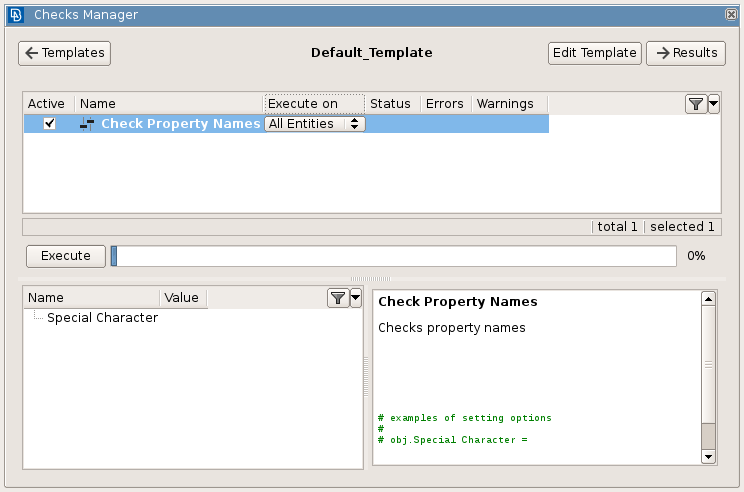
The Execution function#
The “Execution” function is used in order to set up the actions that will take place after the user presses the Execute button in Checks Manager. It must have the same name as the value given as the first member of the “exec_action” tuple, of the CheckDescription object.
It should also create and return the result items of the Check, which are represented as objects of the class ansa.base.CheckReport.
base.CheckReport(type)
In order to add issues under the CheckReport item, the ansa.base.CheckReport.add_issue() method must be used:
header_item.add_issue(status, entities, description, has_fix)
Note
Extra arguments can be provided to the add_issue method, in order to either be used on the “Fix function” or to create extra list columns. If the argument starts with an underscore (_), it is considered as hidden, thus no column is created.
A code example is shown below:
from ansa import base
from ansa import constants
def _exec_func(entities, params):
pattern = params['Special Character']
# Name of the header in the results/report list
ck = base.CheckReport(type='Properties with problematic names')
ck.has_fix = True
for ent in entities:
if pattern in ent._name:
ck.add_issue(entities=[ent], status='Error', description='Property name contains a special character', _special_char=pattern, info='Extra column')
return [ck]
The following image demonstrates the results of the Check execution, where all the necessary information is shown, as well as the extra “Info” column.
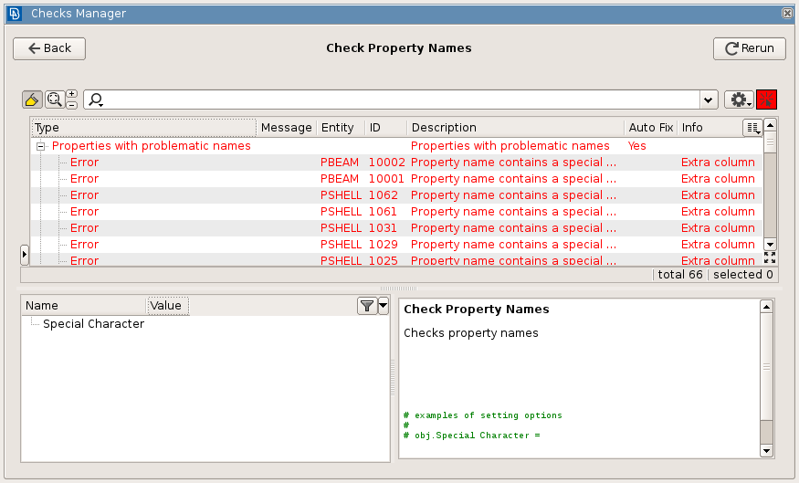
The Fix function#
The “Fix function” is called through the Fix option of the right click menu of an “issue”.
The Fix is enabled only if:
A “Fix” function has been defined in the “Definition” function through the CheckDescription object.
The issue is fixable. This is controlled through the
ansa.base.CheckReport.has_fixattribute of the CheckReport object.
The fix function must have the same name as the value given as the first member of the “fix_action” tuple of the CheckDescription object.
It should also apply a fix to the provided CheckReport issue items and accordingly remove them from the list through the ansa.base.CheckReport.is_fixed() attribute and the ansa.base.CheckReport.update() method.
Finally, the return value of the function has to be one of the following:
Value |
Description |
|---|---|
base.Check.FIX_APPLIED |
Denotes that the fix has been applied successfully. |
base.Check.FIX_CANCELED |
Denotes that the fix hasn’t been applied successfully. |
base.Check.FIX_APPLIED_REQUEST_RERUN |
Triggers the automatic rerun of the check. |
An example of the Fix function can be seen below:
from ansa import base
from ansa import constants
def _fix_func(issues):
for issue in issues:
for ent in issue.entities:
name = ent._name
new_name = name.replace(issue._special_char, '_')
ent.set_entity_values(constants.NASTRAN, {'Name': new_name})
issue.is_fixed = True
issue.update()
return base.Check.FIX_APPLIED
Note
In the case where only the header is selected, ANSA calls the “Fix” function for every “issue” under the header. If all “issues” are fixed, they are removed from the list and the header becomes green.
The complete source code of this example can be found here: Check Property Names example.
Adding the Check in the Checks Manager#
The User Defined Checks can be added in the Checks Manager and be treated as any other built in Check. They are only added once and every time ANSA is launched they are available to use.
The steps to add a User Defined Check in the Checks Manager are the following:
Load the Python modules that hold the “Definition”, “Execution” and “Fix” functions. In most cases, those three functions are contained in the same module.
Execute the “Definition” function, which should also save the check through the CheckDescription.save.
Add the path of the produced xml file in the ANSA defaults keyword “Default_UserDefinedChecks_File” and restart ANSA.
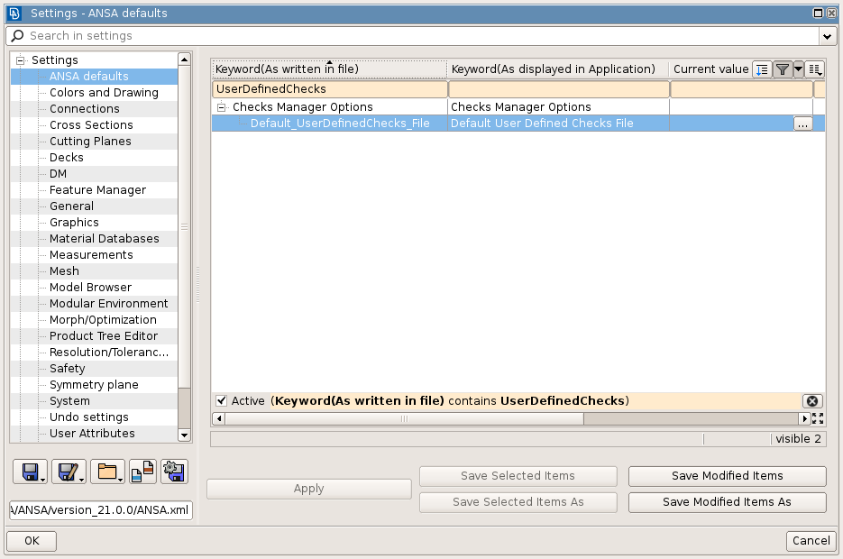
Note
The user does not have to repeat the above procedure every time the “Execution” or the “Fix” function gets modified. However, for any changes in the “Definition” function a new “.plist” xml file should be created, thus the steps 1 and 2 should be repeated.
After successfully executing the aforementioned steps, the check should be available both in the Template list of checks and under the Checks Tool Button > User-Defined Checks.
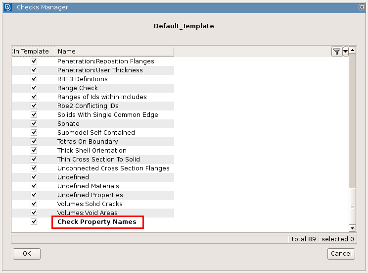
Sequence of reading the user defined check list#
Every time ANSA is launched, it’s looking for a user defined Checks plist under three specific locations in the following order:
A user path specified in ANSA.defaults (as shown).
A <LAYOUT>_UserDefined.plist under the .BETA folder, e.g ANSA_UserDefined.plist
A <LAYOUT>_UserDefined.plist under the config directory of the ANSA installation folder.
In case of conflicts between the names of checks, those defined in .BETA are kept.
Executing the User Check directly through the API#
Apart from creating a user defined Check list (.plist), there is also a way to execute a User Check on demand, through ANSA’s API.
This can be achieved by using the API function ansa.base.checks.general.FromDescription().
It works similarly to the API functions used to execute the native ANSA Checks, with the only difference being a CheckDescription object that should be provided as argument.
For example, our aforementioned Definition Function could be modified as follows to execute the User Check on demand:
from ansa import base
from ansa import constants
def check_prop_names():
options = { 'name': 'Check Property Names',
'exec_action': ('_exec_func', __file__),
'fix_action': ('_fix_func', __file__),
'deck': constants.NASTRAN,
'requested_types': ('PSHELL', 'PSOLID' ,'PBEAM'),
'info': 'Checks property names'}
my_check = base.CheckDescription(**options)
my_check.add_str_param('Special Character', ' ')
obj = base.checks.general.FromDescription(my_check)
obj.execute()
This code will execute the User Check and open the Checks Manager to view the results.
Note
The User Check can also be executed without opening the Checks Manager, by providing the relevant argument to the ansa.base.Check.execute() method. This is a method of the class ansa.base.Check, where the returned object belongs to. Its documentation holds detailed information about all its attributes and methods.
User Checks on Entity Cards#
The user is provided with the ability to create and run a series of checks, when the ‘OK’ button of an entity card is pressed, similar to the existing native ones. The checks might refer to the appropriateness of the values that are entered in the various fields of the entity card. If the checks are not fulfilled, then a field may be marked with an error or with a warning color, the card may be prevented from closing, or a message can be printed to the user.
In order to create a custom check, the following steps need to be set up:
An xml file needs to be created, which will denote the path of the python file, as well as the entity card types and the decks where the respctive checks will be applied. In addition, the path of the xml file needs to be declared in the Xml_File_For_Edit_Card_Script_Checks parameter of the ANSA defaults.
The xml file lists all the entities on which the checks will be performed and which functions from the python module will be called. Specifically, the keyword ‘decks’ defines the deck, the keyword ‘type’ defines the entity card type and the keyword ‘function’ defines the function that will be executed. There is also an optional keyword ‘objects_mode’, which can be set to “true”, in order for the ‘card_fields’ argument to be a dictionary with values the objects of the respective label fields (just like the return dictionary of the function
ansa.base.Entity.get_entity_values(). If this keyword is ommited, then it is interpreted as “false”. The syntax of an xml file can be seen below:
<EditCardUserChecks>
<UserScriptLocation path="/home/my_name/checks/card_checks.py"/>
<ScriptFunction decks="RADIOSS" type="PROP/SHELL" objects_mode="true" function="check_properties"/>
<ScriptFunction decks="RADIOSS" type="PROP/SH_ORTH" objects_mode="false" function="check_properties"/>
<ScriptFunction decks="RADIOSS" type="INTER" function="check_inters"/>
</EditCardUserChecks>
The python module needs to be created, containing the functions that will be called to perform the checks. For each of these functions, the first argument holds the
ansa.base.Entityobject where the check is performed on and the second argument holds the card fields dictionary of the entity’s edit card. The following example demonstrates two card checks. One that checks the NIP parameter relative to the thickness value of the property, and another that checks the ISTF parameter of an /INTER/TYPE7:
import ansa
from ansa import constants
from ansa import base
def check_properties(entity, card_fields, *args, **kwargs):
nip = card_fields['N']
thick = card_fields['THICK']
is_error = False
if thick < 1 and nip != 3:
is_error = True
elif thick >= 1 and nip != 5:
is_error = True
if is_error:
mes = "NIP parameter should respect 'If thickness<1mm then NIP=3 else NIP=5'"
else:
mes = None
ret_dict = {'message': mes, 'error_fields': ('N',), 'error': is_error}
return ret_dict
def check_inters(cnctn, card_fields):
ret_dict = {'message': None, 'error_fields': ('ISTF',), 'error': False}
if card_fields['TYPE'] != 'TYPE7':
return ret_dict
istf = card_fields['ISTF']
if istf != '0' and istf != '4':
eid = card_fields['EID']
name = card_fields['Name']
ret_dict['message'] = '/INTER/TYPE7 %d %s: The ISTF parameter must be set to 0 or 4' % (eid, name)
return ret_dict
As shown on the example, the function has to return a dictionary with the following keys-values:
Key |
Value
|
|---|---|
‘error’ |
True or False. If True, the edit card will not close.
|
‘message’ |
A user message on error or warning. Do not supply it if you do not want a
message to be printed.
|
‘error_fields’ |
A python list containing all the card field labels whose values are erroneous
according to the user check. These fields will become red.
|
‘warning_fields’ |
A python list containing all the card field labels whose values throw a warning,
according to the user check.
|
The complete source code of this example can be found here Card Checks
If the check is not fulfilled, then the appropriate field will be marked with a red warning color and the card will be prevented from closing. Also, the defined error message will be printed.
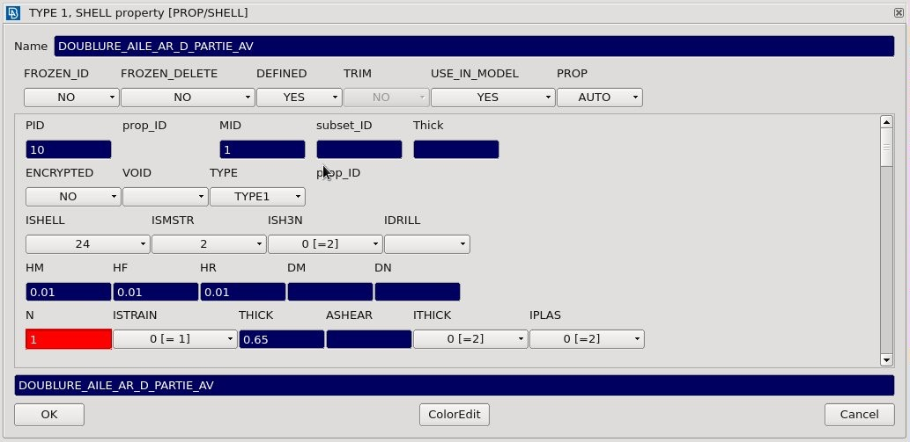
User List Actions#
Introduction#
ANSA offers the capability of adding a custom user action in ANSA’s entities list. Such an action corresponds to the execution of a user defined Python function, triggered by right clicking on a specific entity and selecting the predefined list action.
The API Python function ansa.base.AddListAction(), exists in order to allow users create a custom action and place it in an entity’s list, based on the entity type. When executing this function, a series of arguments have to be provided, which apart from the Python module and function to be executed, also define the action’s name, its parental hierarchy, its potential icon and more.
Usage Examples#
The following code creates a custom list action in the PROPERTY list in ABAQUS deck.
def main():
actions_callback_file = '/path/to/action_callbacks.py'
base.AddListAction(action_name='User Action', deck=constants.ABAQUS, keyword='PROPERTY',
filename=actions_callback_file, function_name='action')
# 'action_callbacks.py' file
def action(deck, entities, alist, *args):
print('Deck:', deck)
print('Number of selected entities:', alist.selected)
print('Number of total entities in list:', alist.total)
# Print the ids of the selected entities
for ent in entities:
print(ent._id)
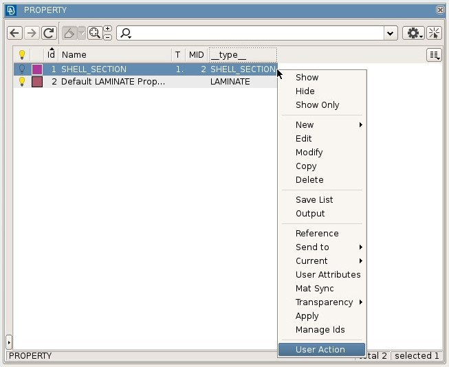
The following code demonstrates the creation of a hierarchy of actions. Also, icons are added by using the respective arguments.
def main():
# Add actions in LAMINATE list in ABAQUS deck under Parent Action
base.AddListAction(action_name='User Action 4', deck=constants.ABAQUS, keyword='LAMINATE',
filename=actions_callback_file, function_name='action',
parent_name='Parent Action', parent_icon_name='file_open_16.png')
# Add actions in LAMINATE list in ABAQUS deck under Parent Action:Child Action
base.AddListAction(action_name='User Action 4.1', deck=constants.ABAQUS, keyword='LAMINATE',
filename=actions_callback_file, function_name='action',
parent_name='Parent Action:Child Action',
icon_name='filter_16.png',
parent_icon_name='file_open_16.png:file_save_16.png')
base.AddListAction(action_name='User Action 4.2', deck=constants.ABAQUS, keyword='LAMINATE',
filename=actions_callback_file, function_name='action',
parent_name='Parent Action:Child Action')
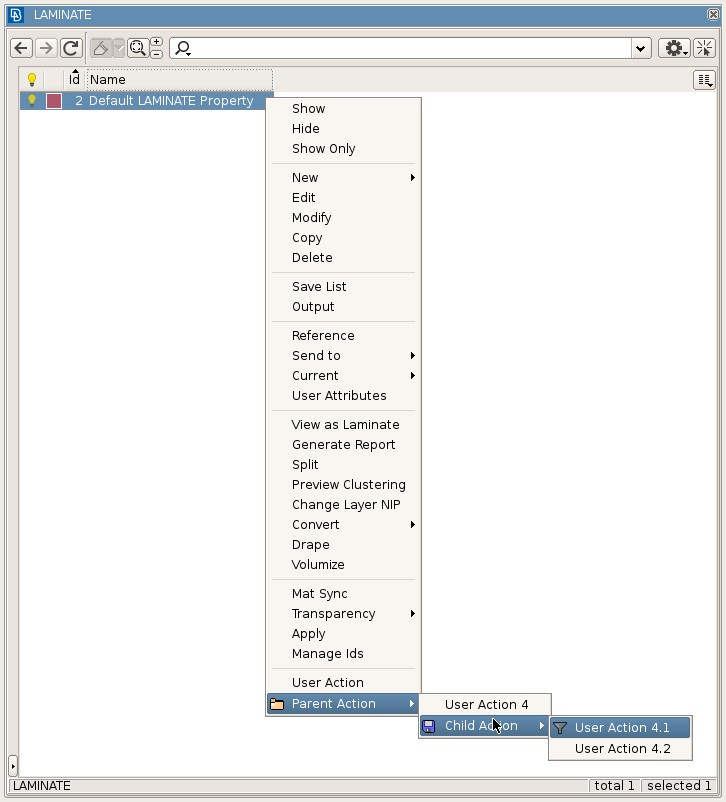
More examples, as well as the full documentation of the API function can be found here: ansa.base.AddListAction().
Also, the complete source code of this example can be found here User List Actions example
High Performance API for Import#
In the case of a massive entity creation when reading a custom input file, the class ansa.base.ImportV1 has to be used. The entity creation performed by the methods of the ImportV1 class, is equivalent to the ANSA native and can be 16 times faster than the commonly used base.CreateEntity function.
The results of a comparison of Massive Entity Creation in ANSA can be seen below:
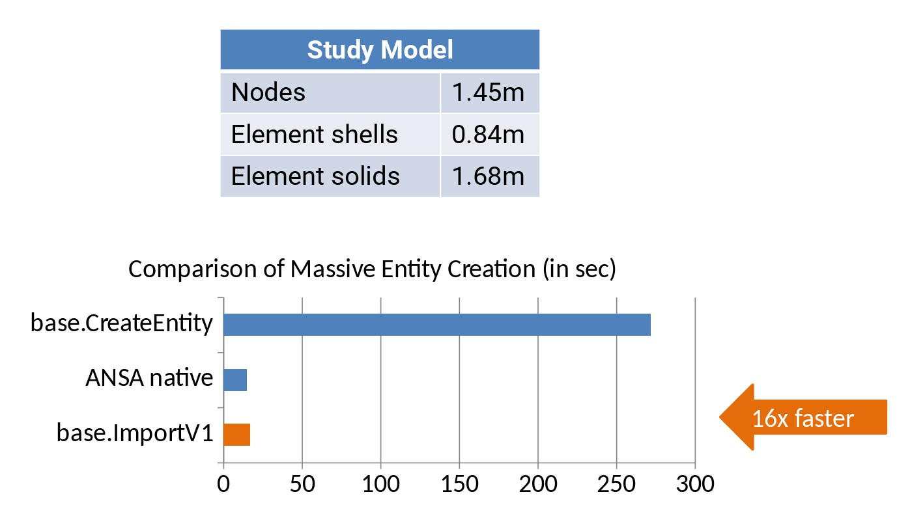
The following example demonstrates the use of the ImportV1 class. A file named ‘dummy-with-solids.free’ is imported, which contains all the information needed to create the nodes, the shells and the solids.
import time
import itertools
import ansa
from ansa import base
from ansa import session
def ImportV1FreeFormat(filename):
session.New('discard')
t1 = time.time()
a = base.ImportV1()
a.start()
f = open(filename)
line = f.readline()
s = line.split()
n_nodes = int(s[0])
n_shells = int(s[1])
n_solids = 0
if len(s) == 3:
n_solids = int(s[2])
# Create Nodes
nid = []
x = []
y = []
z = []
n_count = 0
for item in map(str.split, itertools.islice(f, n_nodes)):
nid.append(n_count + 1)
x.append(float(item[0]))
y.append(float(item[1]))
z.append(float(item[2]))
n_count += 1
a.create_nodes(nid, x, y, z)
del nid, x, y, z
# ~Create Nodes
# Create Shells
eid = []
t = []
pid = []
n1 = []
n2 = []
n3 = []
n4 = []
n_count = 0
for item in map(str.split, itertools.islice(f, n_shells)):
eid.append(n_count + 1)
pid.append(1)
n1.append(int(item[0]))
n2.append(int(item[1]))
n3.append(int(item[2]))
n4.append(int(item[3]))
if n3[n_count] == n4[n_count]:
e_type = a.TRIA
else:
e_type = a.QUAD
t.append(e_type)
n_count = n_count + 1
a.create_shells(eid, t, pid, n1, n2, n3, n4)
del eid, t, pid, n1, n2, n3, n4
# ~Create Shells
# Create Solids
if n_solids > 0:
eid = []
pid = []
n1 = []
n2 = []
n3 = []
n4 = []
n5 = []
n6 = []
n7 = []
n8 = []
t = []
n_count = 0
for item in map(str.split, itertools.islice(f, n_solids)):
eid.append(n_count + 1)
pid.append(2)
n1.append(int(item[0]))
n2.append(int(item[1]))
n3.append(int(item[2]))
n4.append(int(item[3]))
n5.append(int(item[4]))
n6.append(int(item[5]))
n7.append(int(item[6]))
n8.append(int(item[7]))
if n5[n_count] == 0:
e_type = a.TETRA
elif n6[n_count] == 0:
e_type = constans.HEOP
elif n7[n_count] == 0 or n8[n_count] == 0:
e_type = a.PENTA
else:
e_type = a.HEXA
t.append(e_type)
n_count = n_count + 1
a.create_solids(eid, t, pid, n1, n2, n3, n4, n5, n6, n7, n8)
del eid, pid, t, n1, n2, n3, n4, n5, n6, n7, n8
# ~Create Solids
f.close()
a.build()
a.finish()
del a
t2 = time.time()
print("Time ImportV1FreeFormat: %f" % (t2-t1))
The complete source code of this example can be found here ImportV1
Persistent Storage in ANSA Database#
By using the class ansa.base.DBStorage, the user has the capability to store and retrieve data in the ANSA Database, in a key-value manner. There are no restrictions in the types and the size of the data saved, while access to the database is accomplished by a series of simple methods:
Method |
Description |
|---|---|
set(key, value) |
Sets a new value in the Database, under the given key. |
get(key [, default]) |
Retrieves the value of a particular key from the Database. |
contains(key) -> bool |
Searches for a particular key in the database and returns True if found, otherwise False. |
remove(key [, default]) |
Removes a particular key record from the Database. |
contents() -> dict |
Returns all the contents of the Database, in the form of a dictionary. |
clear_contents() |
Clears the contents of the Database. |
This object is accompanied by a GUI, in order to make it easier to investigate what is stored in the Database. The GUI can be found in Utilities>User Storage: Database
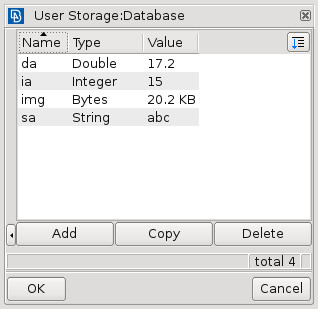
An example usage of the DBStorage class can be seen on the code below:
import ansa
import pickle
from ansa import base
from ansa import constants
from ansa import session
def save_ansa_db():
session.New('discard')
dbs = base.DBStorage()
dbs.set('ia', 15)
dbs.set('ib', 16)
dbs.set('da', 17.)
dbs.set('db', 18.)
dbs.set('sa', 'earth')
dbs.set('sb', 'moon')
node = base.CreateEntity(constants.ABAQUS, 'NODE', {'Name': 'User node'})
my_dict = {'name': 'Bob', 'company': 'BETA CAE', 'node': node}
p_my_dict = pickle.dumps(my_dict)
dbs.set('my_info', p_my_dict)
base.SaveAs('/home/Desktop/db.ansa')
del dbs
def read_ansa_db():
session.New('discard')
base.Open('/home/Desktop/db.ansa')
dbs = base.DBStorage()
ia = dbs.get('ia', 0)
print('ia:', ia)
ib = dbs.get('ib', 0)
ic = dbs.get('ic', 0)
dbs.remove('ia')
da = dbs.get('da', 0.)
db = dbs.get('db', 0.)
dc = dbs.get('dc', 0.)
sa = dbs.get('sa', 'default')
print('sa:', sa)
sb = dbs.get('sb', 'default')
dc = dbs.get('dc', 'default')
v = dbs.get('my_info')
my_info = pickle.loads(v)
print('my info:', my_info)
print('my info: node:', my_info['node'])
The complete source code of this example can be found here ANSA Database Storage
Note
DBStorage is a unique object (singleton) in the program. Thus, every DBStorage instance points to the same object, or in other words, the same database.
Drawing on the Screen#
ANSA features a User defined drawing on the screen, which has similar functionality to the build-in style and affects the Shells, the Solids and the Solid Facets. In order for a custom drawing style to be created, the class ansa.base.DrawMode has to be used. By creating a DrawMode object, a widget is created in the ANSA drawing area, in order to control the visibility and interact with the various categories. Also, the created DrawMode appears in the Draw Mode button of the Drawing Styles toolbar, as USER along with its name. It can be enabled and disabled manually, just like the native Draw Modes.
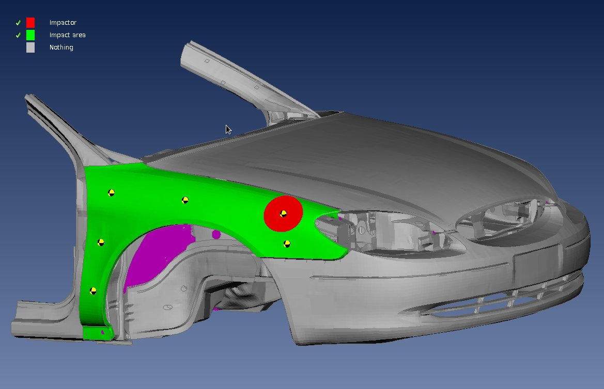
The following example demonstrates a simple use of the DrawMode class:
import ansa
from ansa import base
from ansa import constants
def impactor_draw_mode():
draw_mode = base.DrawMode("Impactor - area")
impactor = base.GetEntity(constants.ABAQUS, 'SET', 1403)
area = base.GetEntity(constants.ABAQUS, 'SET', 1404)
imp_ents = base.CollectEntities(constants.ABAQUS, impactor, 'SHELL', True)
area_ents = base.CollectEntities(constants.ABAQUS, area, 'SHELL', True)
index = draw_mode.add_category(entities=imp_ents, label='Impactor', color=0xFF000000)
index = draw_mode.add_category(entities=area_ents, label='Impact area', color=0x00FF0000)
draw_mode.enable()
The complete source code of this example can be found here Draw Mode
Draw Primitives on the ANSA GL Area#
The user is able to draw colored primitive shapes on the ANSA graphics area, by using an object of the class ansa.base.Canvas. The availables primitives to be drawn are:
Points: point, square, square_hollow, cross, circle, circle_hollow, diamond, diamond_hollow, hexa_hollow
Lines: line, stippled_line
Labels
Arrows
2D Shapes: triangle, quad
3D Shapes: sphere, cube, cylinder
By execution of the following code, all the primitive shapes that are shown in the following image are created:
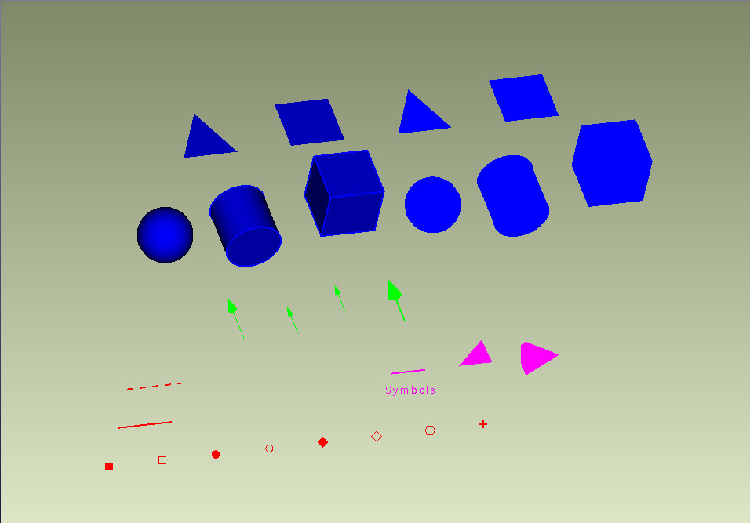
import ansa
from ansa import base
def main():
canvas = base.Canvas('MyCanvas')
# Points
canvas.set_color(0xFF0000FF)
canvas.point_size(10)
canvas.point(0, 0, -1)
canvas.point(1, 0, -1, 'square_hollow')
canvas.point(2, 0, -1, 'circle')
canvas.point(3, 0, -1, 'circle_hollow')
canvas.point(4, 0, -1, 'diamond')
canvas.point(5, 0, -1, 'diamond_hollow')
canvas.point(6, 0, -1, 'hexa_hollow')
canvas.point(7, 0, -1, 'cross')
# Lines
canvas.set_color(0xFF0000FF)
canvas.line((0, 0, 0), (1, 0, 0))
canvas.line_width(2)
canvas.stippled_line((0, 0, 1), (1, 0, 1))
# Arrows
canvas.set_color(0x00FF00FF)
canvas.arrow((2, 0, 2), (2, 1, 2))
canvas.arrow((3, 0, 2), (3, 1, 2), type=1)
canvas.arrow((4, 0, 2), (4, 1, 2), type=2)
canvas.arrow((5, 0, 2), (5, 1, 2), line_width=2, size_of_tip=0.25, pos_of_tip=0.6, type=0)
# Shapes 2D
canvas.set_color(0x0000FFFF)
canvas.triangle((0, 0, 7), (1, 0, 7), (0.5, 1, 7))
canvas.triangle((4, 0, 7), (5, 0, 7), (4.5, 1, 7), False)
canvas.quad((2, 0, 7), (3, 0, 7), (3, 1, 7), (2, 1, 7))
canvas.quad((6, 0, 7), (7, 0, 7), (7, 1, 7), (6, 1, 7), False)
# Shapes 3D
canvas.set_color(0x0000FFFF)
canvas.sphere((0, 0, 5), 0.5)
canvas.sphere((5, 0, 5), 0.5, False)
canvas.cylinder((1.5, 0, 5), (0, 1, 0), 0.5, 1)
canvas.cylinder((6.5, 0, 5), (0, 1, 0), 0.5, 1, False)
canvas.cube((3, 0, 4.5), (4, 0, 4.5), (4, 1, 4.5), (3, 1, 4.5), (3, 0, 5.5), (4, 0, 5.5), (4, 1, 5.5), (3, 1, 5.5))
canvas.cube((8, 0, 4.5), (9, 0, 4.5), (9, 1, 4.5), (8, 1, 4.5), (8, 0, 5.5), (9, 0, 5.5), (9, 1, 5.5), (8, 1, 5.5), False)
# Symbols
canvas.set_color(0xFF00FFFF)
canvas.symbol_origin(5, 0, 0)
canvas.symbol_line((5, 0, 1), (6, 0, 1))
canvas.symbol_triangle((7, 0, 1), (8, 0, 1), (7.5, 0, 2))
canvas.symbol_cone((9, 0, 1), (10, 0, 1), 0.5)
canvas.symbol_label((5, 0, 0), 'Symbols')
canvas.show()
# canvas.hide()
# canvas.clear()
# canvas.delete()
names = base.CanvasList()
for name in names:
print(name)
canvas = base.Canvas(name)
print(canvas._name)
The following source code demonstrates the creation of cogs and arrows on the selected elements:
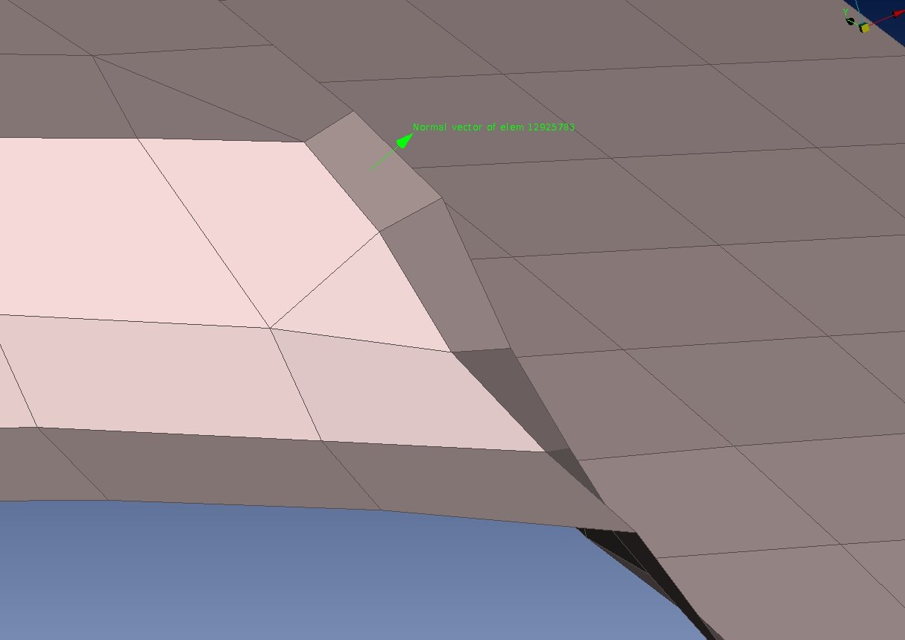
import ansa
from ansa import base
from ansa import constants
def _shell_norm_in_canvas(canvas, elem):
n_vec = base.GetNormalVectorOfShell(elem)
tail = base.Cog(elem)
head = (tail[0] + 2*n_vec[0], tail[1] + 2*n_vec[1], tail[2] + 2*n_vec[2])
canvas.arrow(tail, head)
canvas.label(head , 'Normal vector of elem %d' % (elem._id, ))
def _shell_cog_in_canvas(canvas, elem):
cog = base.Cog(elem)
canvas.point(cog[0], cog[1], cog[2], 'circle_hollow')
def _wait_for_middle(text):
print(text)
base.PickEntities(constants.ABAQUS, 'SHELL')
def main():
elem = base.PickEntities(constants.ABAQUS, 'SHELL')[0]
canvas = base.Canvas('MyCanvas')
canvas.set_color(0x00FF00FF)
_shell_norm_in_canvas(canvas, elem)
canvas.show()
_wait_for_middle("Press middle to draw cog on elements")
vals = elem.get_entity_values(constants.ABAQUS, ('__prop__', ))
prop = vals['__prop__']
elems = base.CollectEntities(constants.ABAQUS, prop, "SHELL", recursive=True)
canvas.delete()
canvas = base.Canvas('MyCanvasProp')
canvas.set_color(0xFF0000FF)
for elem in elems:
_shell_cog_in_canvas(canvas, elem)
_wait_for_middle("Press middle to draw arrows on the whole property")
canvas.delete()
canvas = base.Canvas('MyCanvasProp')
canvas.set_color(0xFF0000FF)
for elem in elems:
_shell_norm_in_canvas(canvas, elem)
canvas.show()
_wait_for_middle("Press middle to destroy the Canvas Draw")
canvas.delete()
base.RedrawAll()
The complete source code of the aforementioned examples can be found here Canvas
User Defined Fringes#
Similar to the DrawMode class presented previously, the user can use the class ansa.base.FringeDrawMode, to create custom fringe drawing styles, in order to alter the view of the model. The User Defined Fringes have the same functionality as the native fringe bars and can affect Shells, Solids, Solid Facets and Nodal results, while a redraw is triggered, every time that the model visibility changes.
All the created FringeDrawModes appear in the Fringe button of the Drawing Styles toolbar, along with their names. They can be enabled and disabled manually, just like the native Fringe Draw Modes. Color bar options are applied to them as well.
The following image shows a User Defined Fringe, based on the Nodal Thickness of the elements.
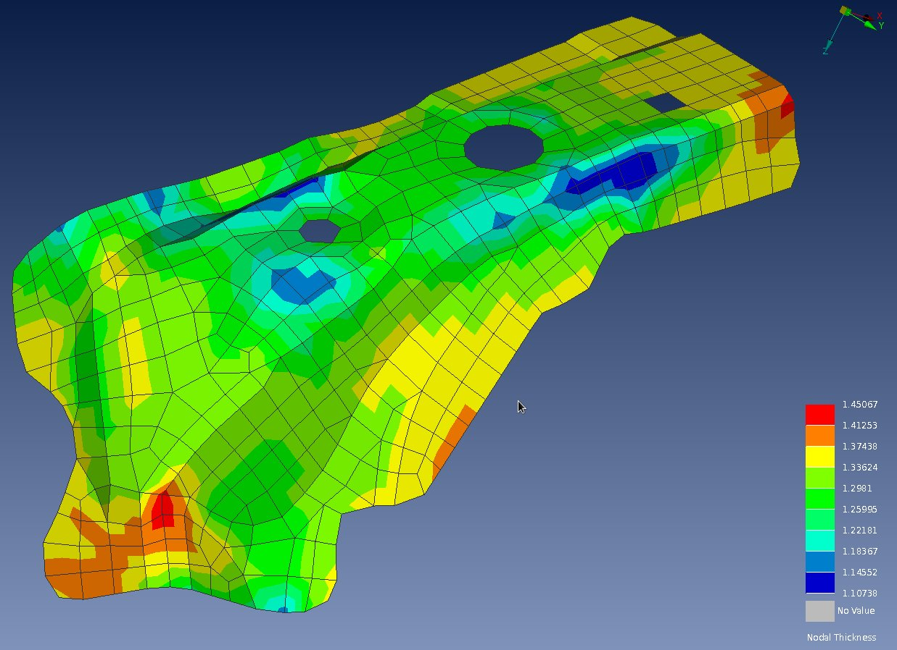
An example usage of the class FringeDrawMode is shown below:
import ansa
from ansa import base
from ansa import constants
class Draw():
def __init__(self, deck):
self.values = {}
self.deck = deck
def start(self):
self.values.clear()
def end(self):
return self.values
def __call__(self, entity):
ret = entity.get_entity_values(self.deck, ('G1', 'G2', 'G3', 'G4', 't1', 't2', 't3', 't4'))
self.values[ret['G1']] = ret['t1']
self.values[ret['G2']] = ret['t2']
self.values[ret['G3']] = ret['t3']
if 'G4' in ret: # QUAD
self.values[ret['G4']] = ret['t4']
def nodal_thickness_draw_mode():
deck = constants.ABAQUS
draw_mode = base.FringeDrawMode('Nodal Thickness')
draw_mode.fringe(deck=deck, element_type='SHELL', mode='node', draw=Draw(deck))
draw_mode.enable()
The complete source code of this example can be found here User Defined Fringes
There is also the capability of drawing each side of a shell with a different color, just like some native Fringe Draw modes, such as EL.STRESS or EL.STRAIN. Below is an example where according to the entity’s id, whether it is even or odd, the top side of the shell is colored with the value 1 or 3 and the bottom side of the shell with the value 2 or 4. Also, every Solid is colored with the mod 3 of its id.
import ansa
from ansa import base
from ansa import constants
# Draw each side of every Shell with the values (1, 2), if its id is even and (3, 4), if it is odd.
# (The first number of the tuple is the color of the top side of the Shell and the second number is the bottom side)
# Also, draw every Solid with the mod 3 of its id.
class Draw():
def __init__(self, deck):
self.values = {}
self.deck = deck
def start(self):
self.values.clear()
def end(self):
return self.values
def __call__(self, entity):
ansa_type = entity.ansa_type(self.deck)
if ansa_type == 'SHELL':
if entity._id % 2 == 0:
self.values[entity] = (1, 2)
else:
self.values[entity] = (3, 4)
elif ansa_type == 'SOLID':
self.values[entity] = entity._id % 3
def nodal_thickness_draw_mode():
deck = constants.ABAQUS
draw_mode = base.FringeDrawMode('SHELLS TOP BOTTOM PLUS SOLIDS')
draw_mode.fringe(deck=deck, element_type=('SHELL', 'SOLID'), mode='shell_top_bottom', draw=Draw(deck))
draw_mode.enable()
The complete source code of this example can be found here User Defined Fringes
Code optimization#
The target of this section is to show what the user should avoid and what techniques to use in order to write efficient code that executes in the fastest possible time.
Accessing Card Values#
Accessing card values through the functions GetEntityCardValues or get_entity_values is a CPU time expensive operation.
Do not call these functions to get the id and the name of an entity:
import ansa
from ansa import constants
from ansa import base
def get_card_values():
props = base.CollectEntities(constants.LSDYNA, None, '__PROPERTIES__')
for prop in props:
ret = base.GetEntityCardValues(constants.LSDYNA, prop, ('Name', 'PID'))
print(ret['Name'])
print(ret['PID'])
The recommended practise is to get the id and name directly from the Entity object:
import ansa
from ansa import constants
from ansa import base
def get_card_values():
props = base.CollectEntities(constants.LSDYNA, None, '__PROPERTIES__')
for prop in props:
print(prop._name)
print(prop._id)
In addition it is much faster to call the GetEntityCardValues once and request all the needed data for a given entity. For example, avoid the following:
import ansa
from ansa import constants
from ansa import base
def get_card_values():
props = base.CollectEntities(constants.LSDYNA, None, '__PROPERTIES__')
for prop in props:
ret_nip = base.GetEntityCardValues(constants.LSDYNA, prop, ['NIP'])
ret_t1 = base.GetEntityCardValues(constants.LSDYNA, prop, ['T1'])
It is two times faster to do the following:
import ansa
from ansa import constants
from ansa import base
def get_card_values():
props = base.CollectEntities(constants.LSDYNA, None, '__PROPERTIES__')
for prop in props:
ret_prop = base.GetEntityCardValues(constants.LSDYNA, prop, ['NIP', 'T1'])
In order to retrieve all the active fields of an Entity’s card, the following can be done:
import ansa
from ansa import constants
from ansa import base
def get_all_card_fields():
prop = base.GetEntity(constants.LSDYNA, 'MAT24 MAT_PIECEWISE_LINEAR_PLASTICITY', 30)
fields = prop.card_fields(constants.LSDYNA, ret_values=True)
print(fields)
The ansa.base.Entity.card_fields() method is especially useful for entity cards that have dynamic number of fields like:
import ansa
from ansa import constants
from ansa import base
def output_nodes():
th_ent = base.GetEntity(constants.RADIOSS, 'TH_NODE', th_node_id)
fields = th_ent.card_fields(constants.RADIOSS, ret_values=True)
print(fields)
Using containers for massive operations at once#
Quite a few ANSA functions take as an argument a single object or a list of objects. This capability may lead the user to calling this function multiple times with a single object as an argument. This method may cause an extensive delay in the execution time. It is highly recommended that these functions are called once, containing all the appropriate objects as a list. For example:
The AddToSet function adds entities in a SET. It is much faster to collect all the Entity objects into a list, in contrast to calling AddToSet for every individual Entity object.
A common non-recommended practise is this:
import ansa
from ansa import base
from ansa import constants
def add_to_set():
elems = base.CollectEntities(constants.LSDYNA, None, 'ELEMENT_SHELL')
tria_set = base.CreateEntity(constants.LSDYNA, 'SET')
for elem in elems:
el_type = elem.get_entity_values(constants.LSDYNA, ('TYPE',))
if el_type['TYPE'] == 'TRIA':
base.AddToset(tria_set, elem) #very slow
The recommended fast method is this:
import ansa
from ansa import base
from ansa import constants
def add_to_set_opt():
elems = base.CollectEntities(constants.LSDYNA, None, 'ELEMENT_SHELL')
tria_set = base.CreateEntity(constants.LSDYNA, 'SET')
tria_elems = []
for elem in elems:
el_type = elem.get_entity_values(constants.LSDYNA, ('TYPE', ))
if el_type['TYPE'] == 'TRIA':
tria_elems.append(elem)
base.AddToset(tria_set, tria_elems)
Similarly with entity deletion:
import ansa
from ansa import base
from ansa import constants
def delete_ents():
elems = base.CollectEntities(constants.LSDYNA, None, 'ELEMENT_SOLID')
for elem in elems:
base.DeleteEntity(elem)
import ansa
from ansa import base
from ansa import constants
def delete_ents_opt():
elems = base.CollectEntities(constants.LSDYNA, None, 'ELEMENT_SOLID')
base.DeleteEntity(elems)
The same concept should be applied in search functions like
ansa.base.NearestNode()
In the example below the first argument can be a list of coordinates. Instead of calling the function for one location at a time, it is much faster to call it for all the locations.
import ansa
from ansa import base
from ansa import constants
def search_near():
coords = [[10, 20 ,30],
[210, 23, 342],
[21, 233, 321],
[1221, 3223, 4212]]
set_obj = base.GetEntity(constants.LSDYNA, 'SET', 100)
for coord in coords:
ret = base.NearestNode(coord, 5, set_obj)
import ansa
from ansa import base
from ansa import constants
def search_near_opt():
coords = [[10, 20 ,30],
[210, 23, 342],
[21, 233, 321],
[1221, 3223, 4212]]
set_obj = base.GetEntity(constants.LSDYNA, 'SET', 100)
ret = base.NearestNode(coords, 5, set_obj)